Advanced Tennis
Bản dịch Việt ngữ này chỉ dùng cho mục đích học tập cá nhân, phi thương mại. Bản quyền tác phẩm gốc thuộc về tác giả và nhà xuất bản.

📖 Lời đề tặng, Lời tựa và Lời giới thiệu
📖 Lời tựa từ Esca Stephens
Đây là cuốn sách về quần vợt lôi cuốn và sâu sắc nhất mà tôi từng được đọc. Ngay từ những ngày đầu, tài năng hứa hẹn của Paul Metzler đã thu hút sự chú ý đặc biệt của tôi; chọn quần vợt làm niềm đam mê cả đời, ông đã trở thành một nhà nghiên cứu tường tận và sắc sảo của môn thể thao này.
Xương sống của nền quần vợt ở mọi quốc gia chính là hàng ngàn tay vợt phong trào và bán chuyên tham gia tranh tài tại vô số giải đấu, cúp câu lạc bộ diễn ra vào mỗi dịp cuối tuần. Đây là tác phẩm được viết trực tiếp dành cho những đấu thủ đó, bởi một người sinh ra và trưởng thành từ chính hàng ngũ của họ.
Tác giả có đầy đủ tư cách và trải nghiệm đỉnh cao để chắp bút tác phẩm này. Bảng thành tích thi đấu phong phú của ông quá dài để liệt kê hết nơi đây; cá nhân tôi, cùng nhiều vị tiền bối khác, đã có vinh dự trao tặng ông vô số chiếc cúp vô địch kéo dài từ năm 1929 cho đến tận hôm nay. Cách ông trình bày các nguyên lý và sự thật chiến thuật một cách rành mạch, khoa học và thực tế sẽ chinh phục bạn ngay khi lật giở những trang đầu tiên.
Các tay vợt trẻ thường thi đấu chập chờn do thiếu hụt vốn trải nghiệm thực chiến. Và đây chính là kho tàng kinh nghiệm vô giá được đúc kết rõ ràng trên từng trang giấy. Cuốn sách này chứa đựng vô vàn chỉ dẫn đắt giá đủ sức thu hút bất kỳ ai khao khát nâng cấp trình độ quần vợt của mình, dù là để thi đấu đỉnh cao hay giao lưu câu lạc bộ. Thậm chí ngay cả các tay vợt hàng đầu của chúng ta cũng sẽ tìm thấy nhiều bài học quý giá để áp dụng.
Tôi hiểu rằng một lời tựa chỉ thực sự hữu ích khi súc tích. Đây là một tác phẩm kiệt xuất — đóng góp to lớn vào việc nâng tầm quần vợt ở mọi nơi về mặt kỹ pháp, bản lĩnh thi đấu và tinh thần thượng võ thể thao cao thượng.
🏆 Lời giới thiệu từ John Newcombe
Bên cạnh những tay vợt nhà nghề và các tuyển thủ quốc tế, có hàng chục ngàn tay vợt trình độ nâng cao đang ngày đêm tập luyện và thi đấu. Nếu bạn chơi quần vợt đều đặn — dù là đấu giải khốc liệt hay rèn luyện thể thao — thì bạn chính là một trong số họ. Quần vợt không phải là nghề kiếm sống của bạn, vì vậy bạn dành trọn những ngày thứ Bảy và Chủ nhật trên sân khấu mặt sân nỉ.
Đó cũng chính là hoàn cảnh mà Paul Metzler đã tôi luyện lối chơi của mình: từ các giải liên câu lạc bộ, liên quận hạt, liên bang, cho đến các giải đấu của Không quân Hoàng gia Úc, đối đầu với đủ mọi đối thủ và trong muôn vàn điều kiện thời tiết khắc nghiệt nhất.
Cuốn sách của ông tràn ngập hơi thở thực chiến phong phú, và nó đánh trúng điểm yếu chí mạng của hầu hết người chơi ngay từ chương mở đầu. 'Tâm lý thi đấu làm thua nhiều trận đấu hơn cả số trận mà các cú đánh có thể cứu vãn' — đó là câu châm ngôn kinh điển. Tác giả đã hóa giải nỗi sợ hãi tâm lý theo cách thực tế, mạch lạc và hữu hiệu nhất mà tôi từng biết. Ông thậm chí còn khiến bạn cảm thấy những âu lo thường ngày trở nên tầm thường và chẳng đáng bận tâm.
Tác giả Paul Metzler sở hữu nhãn quan sắc bén như loài chim ưng, và mọi chỉ dẫn của ông được truyền tải vô cùng dung dị, dễ hiểu. Ông khơi dậy trong bạn niềm đam mê sâu sắc đối với cấu trúc kỹ thuật của từng cú vung vợt và bức tranh chiến thuật toàn cảnh của trận đấu. Đó chính xác là những gì một cuốn sách hướng dẫn đỉnh cao cần mang lại.
Ông hiểu rằng bạn luôn khao khát chiến thắng, dù bạn là đấu thủ chuyên nghiệp hay phong trào, vì vậy ông xây dựng toàn bộ nội dung xoay quanh chủ đề chiến thắng — nhưng bạn sẽ thấy ẩn sau từng dòng chữ là bài học lớn về tinh thần thượng võ và đạo đức thi đấu. Tinh thần thể thao là một phần tất yếu của trận đấu, giống như khiếu hài hước là gia vị của cuộc sống vậy.
Cuốn sách 'Advanced Tennis' này có thể giúp bạn nâng cấp trình độ lên tương đương 15 điểm mỗi game đấu (tăng một bậc trình độ rõ rệt). Đôi khi chìa khóa nằm ở một mẹo chỉnh sửa động tác; đôi khi nó nằm ở việc phát hiện ra các 'lỗi sai cố hữu' của đối phương; nhưng trên hết, giá trị lớn nhất nằm ở sự tự tin vững chắc khi bạn nắm trọn quyền kiểm soát toàn bộ cục diện trận đấu. Tôi từng ước mình có cuốn sách này khi còn đang chật vật tìm đường bước lên đỉnh cao thế giới. Giờ đây, tôi vẫn thường xuyên áp dụng rất nhiều nguyên lý của ông.
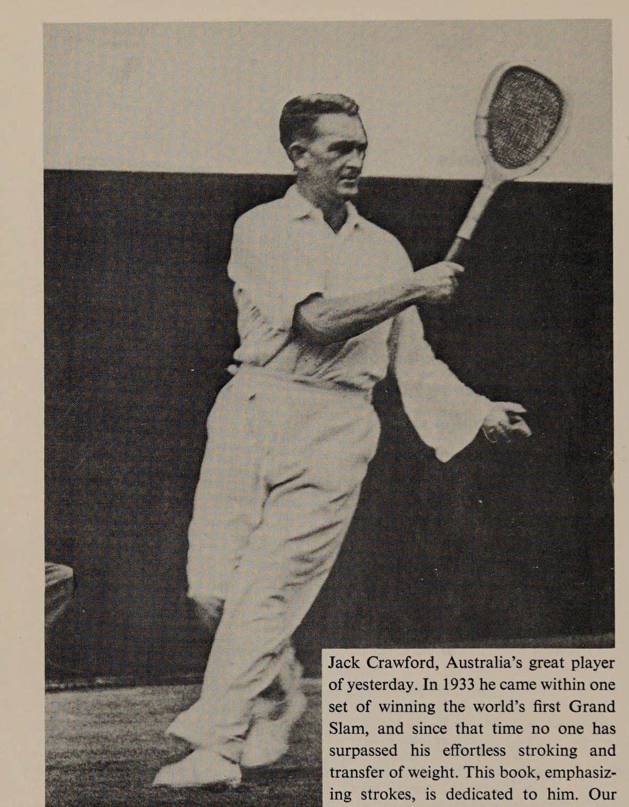
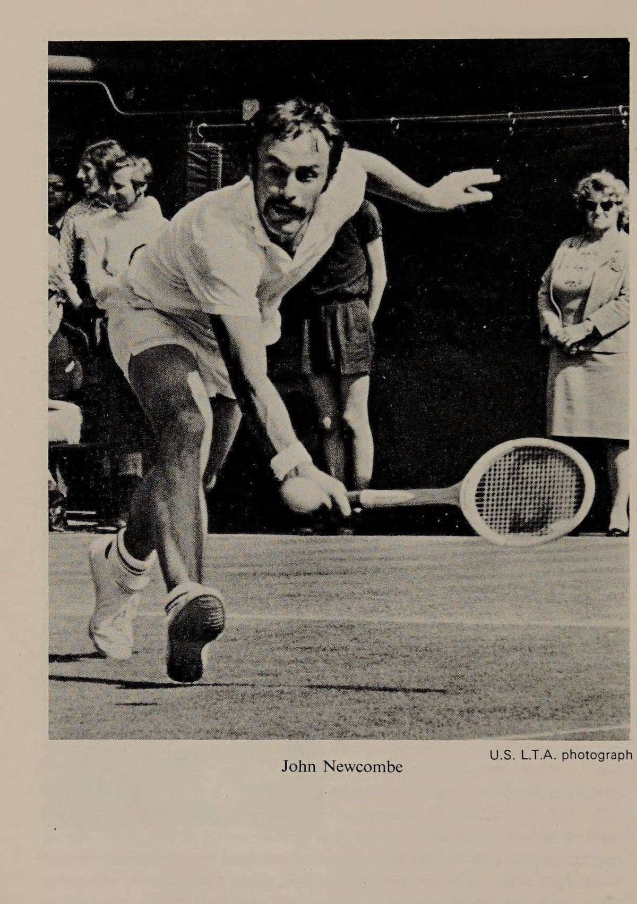
🧠 Chương 1: Tâm lý thi đấu (Temperament)
1. Giải mã ảo tưởng về 'Bản lĩnh bẩm sinh'
Tâm lý thi đấu, dưới hình thái này hay hình thái khác của sự mất bình tĩnh và hoảng loạn, gần như chắc chắn đã từng kìm hãm bước tiến quần vợt của bạn trong quá khứ. Nó đã cướp đi cơ hội chiến thắng trong nhiều trận đấu tưởng chừng đã nằm trong tay; thậm chí nó còn phủ bóng đen lên niềm vui thi đấu của bạn trong tương lai, đặc biệt là ở những trận đánh đơn căng thẳng.
Rất nhiều nỗi dằn vặt đó hoàn toàn không đáng có. Bạn không việc gì phải gánh chịu những lo lắng thái quá như vậy. Đúng là bạn không thể rũ bỏ hoàn toàn áp lực tâm lý chỉ sau một đêm, nhưng bạn hoàn toàn có thể triệt tiêu ảnh hưởng tiêu cực của nó xuống mức tối thiểu — mức độ mà nó chỉ còn là một phần tự nhiên của trò chơi chứ không thể phá vỡ lối đánh của bạn vào những thời khắc quyết định.
Người ta thường truyền tai nhau những quan niệm sai lầm về mẫu đấu thủ 'sinh ra đã có bản lĩnh thép'. Họ chỉ vào những tay vợt chỉ có 'một cú rưỡi' (tức là chỉ có cú thuận tay tạm ổn và quả giao bóng hai đều đều, còn trái tay hầu như không biết đánh). Mẫu người chơi này sẵn sàng chạy hàng dặm trên sân trong các loạt bóng bền để né trái đánh thuận, và chẳng bao giờ phạm lỗi giao bóng kép vào thời khắc ngặt nghèo (điều dễ hiểu vì họ đã tập quả giao bóng hai quá nhiều). Thế là thiên hạ trầm trồ gán cho họ danh xưng 'bản lĩnh trời phú'.
Sự thật là chẳng có ai sinh ra đã sở hữu bản lĩnh thi đấu thép. Bản lĩnh đó được tôi luyện qua quá trình hiểu rõ năng lực bản thân và loại bỏ những rủi ro kỹ thuật không cần thiết. Khi một tay vợt biết chắc cú đánh của mình có độ tin cậy cơ học vững chắc, tâm lý thi đấu tự khắc sẽ ổn định và kiên định.
2. Nguồn gốc thật sự của tâm lý thất thường: Khuyết tật cơ học trong cú đánh
Mẫu tay vợt bị hiểu lầm nhiều nhất trên sân chính là người sở hữu những cú đánh trông có vẻ hào nhoáng nhưng lại thi đấu cực kỳ thất thường. Khi họ thua trận, người ta thường chê trách rằng họ 'thiếu ý chí', 'yếu bóng vía' hay 'bỏ cuộc giữa chừng', trong khi nhân cách và khát khao của họ hoàn toàn trong sáng. Tôi tin chắc rằng tâm lý thi đấu phập phù của họ bắt nguồn từ chính những cú đánh thiếu chuẩn xác chứ không phải do bản tính con người.
Nếu phân tích kỹ lối chơi của một tay vợt như vậy, bạn sẽ thấy anh ta không hề mắc lỗi ở những pha bắt lưới nhanh hay đờ-mi vô-lê chớp nhoáng, mà thường xuyên hỏng ăn ở cú giao bóng và các cú đánh bóng nảy (cú groundstroke thuận tay và trái tay). Tại đây, anh ta mắc phải một khuyết tật kỹ thuật cốt lõi: mặt vợt không di chuyển cùng hướng trên đường đi của quả bóng trong một khoảng cự ly đủ dài.
Thay vì đưa mặt vợt đi xuyên qua tâm bóng và duy trì quỹ đạo tiếp xúc tịnh tiến về phía trước, anh ta lại giật vợt sang bên hoặc ngắt quãng đà vung quá sớm. Vì thế, chỉ cần điểm tiếp xúc lệch đi một vài milimet, bóng sẽ lập tức bay rúc lưới hoặc văng ra ngoài sân. Khi nhận thấy cú đánh của mình lúc vào lúc ra một cách may rủi, nỗi sợ hãi tự nhiên xâm chiếm tâm trí anh ta. Sự dao động tâm lý sinh ra từ chính sự bất an về mặt cơ học, chứ không phải do anh ta thiếu dũng khí!
Một khi bạn sửa chữa được quỹ đạo vung vợt, đảm bảo mặt vợt bám theo đường bay của bóng đủ lâu và chuyển trọng tâm chắc chắn về phía trước, bạn sẽ lập tức cảm nhận được sự chắc chắn. Bạn sẽ không còn phải đánh cược số phận mỗi lần chạm bóng, và tâm lý thi đấu sẽ tự động thăng hoa.
3. Chế ngự trạng thái căng thẳng thần kinh trước và trong trận đấu
Cảm giác hồi hộp, trống ngực đập liên hồi, cổ họng khô khốc hay đôi chân có cảm giác nặng trĩu trước giờ khai cuộc là phản ứng sinh lý hoàn toàn bình thường của cơ thể trước một thử thách cạnh tranh. Ngay cả các nhà vô địch Davis Cup dày dạn kinh nghiệm cũng trải qua cảm giác này trước mỗi trận chung kết.
Điều phân biệt giữa một đấu thủ bản lĩnh và một người chơi non nớt là cách họ phản ứng với cảm giác hồi hộp đó. Người non nớt để cho sự căng thẳng biến thành nỗi sợ hãi tê liệt: họ bắt đầu co rúm các nhóm cơ bắp, cầm chặt cán vợt như thể đang nắm một thanh sắt, và vội vã đánh bóng cốt chỉ để tống khứ quả bóng sang sân đối phương. Ngược lại, đấu thủ dày dạn hiểu rằng đây là nguồn năng lượng adrenaline đang được kích hoạt để giúp các giác quan của họ trở nên nhạy bén hơn.
Để giải tỏa căng thẳng trước trận đấu, hãy thực hiện các biện pháp cụ thể mang tính vận động: đi bộ vững chãi quanh sân, cảm nhận độ bám của đế giày trên mặt sân, kiểm tra kỹ lưỡng độ căng của mặt dây vợt và tập trung quan sát các chi tiết vật lý xung quanh thay vì chìm đắm trong những suy nghĩ mông lung. Trong lúc khởi động, hãy hít thở thật sâu từ cơ hoành, thả lỏng các ngón tay trên cán vợt giữa các lần đánh bóng, và cố gắng đánh những đường bóng dài và đều để cơ bắp dần tìm lại cảm giác thư giãn tự nhiên.
4. Nghệ thuật tập trung: Phân bổ năng lượng tinh thần theo nhịp điệu
Nhiều người lầm tưởng rằng tập trung cao độ có nghĩa là phải duy trì trạng thái căng như dây đàn suốt hai tiếng đồng hồ diễn ra trận đấu. Đó là cách nhanh nhất dẫn đến kiệt quệ thần kinh và sụp đổ ở set đấu quyết định. Bộ não con người không thể duy trì sự chú ý tột độ liên tục trong một khoảng thời gian dài như vậy.
Tập trung trong quần vợt phải mang tính chu kỳ và nhịp nhàng. Khi bóng đang lăn hoặc chuẩn bị vào điểm giao bóng, bạn bật công tắc tập trung lên 100%: mắt dán chặt vào quả bóng, cơ thể sẵn sàng phản xạ. Nhưng ngay khi điểm số kết thúc (dù thắng hay thua), bạn phải lập tức ngắt công tắc đó trong khoảng 15 đến 20 giây: quay lưng lại lưới, chỉnh lại dây vợt, hít một hơi thở sâu, thả lỏng hai vai và để tâm trí hoàn toàn thanh thản.
Đừng bao giờ để tâm trí vướng bận bởi những quyết định bất lợi của trọng tài, những pha bóng chạm mép lưới may mắn của đối thủ, hay việc tự trách bản thân vì một lỗi đánh hỏng ngớ ngẩn. Điểm số vừa qua đã vĩnh viễn thuộc về lịch sử; điểm số tiếp theo mới là thứ quyết định vận mệnh trận đấu. Tập trung vào từng đường bóng hiện tại chính là vũ khí tối thượng của một đấu thủ lớn.
5. Tránh bẫy 'Ăn mừng sớm' và 'Buông xuôi sớm'
Một trong những cái bẫy tâm lý nguy hiểm nhất xảy ra khi một tay vợt đang dẫn trước với cách biệt lớn, ví dụ như dẫn 5-1 hoặc 40-0. Họ bắt đầu tưởng tượng ra cảnh mình bắt tay đối thủ ăn mừng chiến thắng, tâm trí rời xa sân đấu, và các cú đánh lập tức mất đi độ sắc sảo cùng sự cẩn trọng cần thiết. Chỉ cần đối thủ gỡ lại một vài game, sự hoảng loạn sẽ bùng phát và trận đấu hoàn toàn có thể đảo chiều.
Ở chiều ngược lại, khi bị dẫn sâu, nhiều người rơi vào cái bẫy buông xuôi, tự an ủi rằng 'hôm nay không phải ngày của mình' để bào chữa cho thất bại. Đó là sự trốn tránh trách nhiệm. Trong quần vợt, chừng nào quả bóng cuối cùng chưa chạm đất, trận đấu vẫn chưa kết thúc. Đã có vô số cuộc lội ngược dòng ngoạn mục diễn ra chỉ bởi một tay vợt kiên định chắt chiu từng điểm một, không màng tới tỷ số chung cuộc.
Hãy thi đấu như thể tỷ số luôn luôn là 0-0 trên từng pha bóng. Đó là phong thái của những nhà vô địch đích thực.
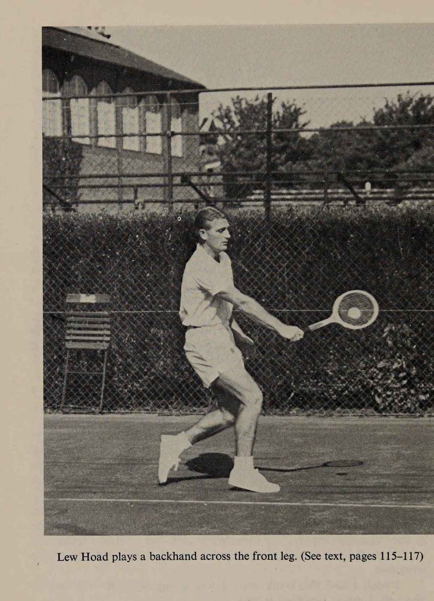
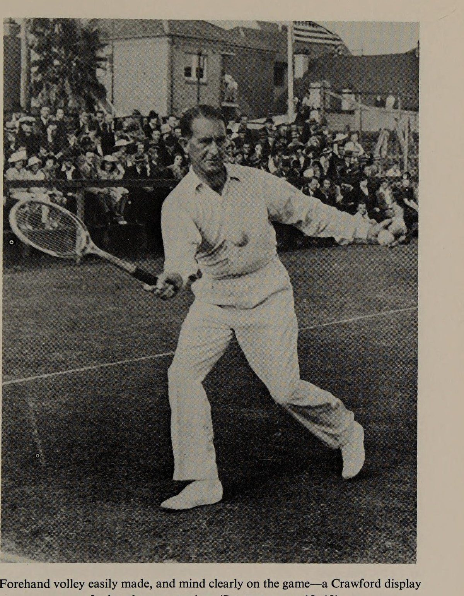
👁️ Chương 2: Quan sát và kiểm soát bóng (Watching and Controlling the Ball)
1. Thế nào là một 'Nhãn quan tinh tường' trên sân quần vợt?
Người ta thường khen ngợi một tay vợt xuất sắc là có 'nhãn quan tinh tường' (a good eye for a ball). Nhưng điều đó không có nghĩa là mắt họ có thị lực vượt trội hơn người thường theo kết quả đo khám y khoa. Nhãn quan trong quần vợt thực chất là khả năng đọc trước quỹ đạo bay, dự đoán điểm rơi và độ nảy của quả bóng dựa trên tư thế tiếp xúc của đối thủ từ phía bên kia lưới.
Một tay vợt có nhãn quan bậc thầy nhìn thấy quả bóng từ rất sớm — không phải khi bóng đã bay qua lưới, mà ngay khoảnh khắc mặt vợt của đối phương chạm vào bóng. Từ góc nghiêng của mặt vợt, tốc độ vung và âm thanh va chạm, họ đã tính toán được đường bóng sẽ bay sâu hay ngắn, xoáy cuộn hay xoáy chuội, từ đó bắt đầu di chuyển chân về hướng bóng trước đối thủ cả một phần mười giây. Đó chính là bí mật tạo nên sự ung dung, thanh thoát của các bậc thầy.
2. Thời gian lưu bóng trên mặt lưới (Long Contact) và Cảm giác bóng
Nếu bạn chỉ gõ nhẹ vào quả bóng hoặc đẩy vợt ngập ngừng, quả bóng sẽ rời mặt lưới gần như tức khắc mà không chịu sự điều khiển trọn vẹn nào của bạn. Để kiểm soát hoàn toàn quỹ đạo, hướng đi và độ xoáy, bạn phải tạo ra cảm giác 'giữ quả bóng trên mặt dây' càng lâu càng tốt.
Tất nhiên, về mặt vật lý thuần túy, thời gian tiếp xúc giữa bóng và dây vợt chỉ diễn ra trong vài phần nghìn giây. Tuy nhiên, cảm nhận tâm lý vận động về một 'tiếp xúc dài' (long contact) đòi hỏi bạn phải vung mặt vợt bám theo quỹ đạo chuyển động mong muốn của quả bóng qua một hành trình liên tục. Cổ tay phải đủ vững vàng để hấp thụ xung lực và truyền tải năng lượng của toàn bộ thân trên xuyên qua tâm bóng.
Khi bạn làm chủ được cảm giác này, quả bóng không còn là một vật thể xa lạ, trơn trượt hay thù địch bay về phía bạn nữa. Quả bóng trở thành một người bạn thân thiết, tuân theo sự dẫn dắt và định hướng của cây vợt trên tay bạn.
3. Bí quyết vàng của các nhà vô địch: Khoảng dừng căn nhịp (The Timing Pause)
Khi quan sát những bậc thầy vĩ đại của làng quần vợt Úc như Jack Crawford, Ken Rosewall hay Lew Hoad thi đấu, người xem luôn có cảm giác kỳ diệu rằng họ dường như có thừa thãi thời gian để xử lý mọi tình huống. Họ không bao giờ tỏ ra vội vã, cuống cuồng, ngay cả khi phải đối đầu với những cú bắn phá sấm sét từ đối phương. Bí mật tối thượng của phong thái đĩnh đạc đó nằm ở 'khoảng dừng căn nhịp' (the timing pause).
Hầu hết người chơi phong trào mắc lỗi vung vợt quá vội: họ vừa chạy tới bóng là đã hấp tấp vung vợt đánh ngay, khiến cơ thể bị mất thăng bằng và cú đánh trở nên giật cục. Các bậc thầy làm điều hoàn toàn ngược lại: họ mở vợt ra phía sau từ rất sớm ngay khi phán đoán được bóng, sau đó có một khoảng dừng tĩnh lặng tinh tế vô cùng ngắn ngủi trong đà lùi của vợt khi chân trước chạm đất đặt trụ. Khoảng dừng này cho phép họ căn chỉnh cự ly chính xác đến từng centimet, dồn toàn bộ trọng lượng cơ thể lên chân trụ, và rồi tung ra cú đánh với vận tốc gia tăng tối đa xuyên qua quả bóng.
Khoảng dừng căn nhịp không làm chậm cú đánh của bạn; trái lại, nó là bộ điều hòa nhịp điệu hoàn hảo biến năng lượng tích lũy của toàn thân thành sức mạnh bộc phát mượt mà nhất. Khi bạn tích hợp được khoảng dừng này vào bộ nhớ cơ bắp, bạn sẽ thấy mình thi đấu với một tâm thế hoàn toàn thư thái và kiểm soát.
4. Kỹ thuật đánh vào 'Rìa ngoài' quả bóng để uốn cong quỹ đạo qua mép lưới
Một trong những cú đánh passing shot uy lực và ngoạn mục nhất trong quần vợt đỉnh cao là cú đánh dọc dây uốn cong vào trong sân (a down-the-line passing shot curving inwards). Hãy hình dung đối thủ của bạn vừa ép bạn dạt hẳn ra ngoài vạch biên dọc sân và họ đang áp sát lưới để đón bắt cú đánh chéo sân của bạn.
Nếu bạn cố gắng đánh một đường bóng thẳng tắp dọc dây, khoảng không gian an toàn phía trên phần lưới cao nhất ở hai bên cột lưới là cực kỳ hẹp, và bóng rất dễ bay văng ra ngoài hành lang hoặc bị đối thủ giơ vợt chặn bắt. Thay vào đó, kỹ thuật của các bậc thầy (được minh họa rõ nét qua cú đánh của Rod Laver) là vung vợt tiếp xúc vào 'rìa ngoài' của quả bóng (hitting outside the ball).
Bằng cách chém nhẹ vào mặt ngoài của bóng tương tự như khi chuẩn bị đánh chéo sân, quả bóng sẽ ban đầu bay chếch ra phía ngoài mép cột lưới — vượt hoàn toàn khỏi tầm với của tay vợt đứng lưới — rồi nhờ lực xoáy ngang kết hợp xoáy cuộn (sidespin + topspin), nó sẽ tự động lượn cong ngoạn mục trở lại vào bên trong vạch biên dọc của đối phương. Đây là đỉnh cao của sự tinh tế trong việc điều khiển xoáy và góc tiếp xúc.
5. Điều chỉnh độ siết của các ngón tay và Cảm giác chạm bóng (Touch)
Độ chặt của tay cầm vợt không phải là một thông số cố định. Việc nắm chặt cán vợt một cách cứng nhắc trong suốt quá trình vung vợt là nguyên nhân hàng đầu làm triệt tiêu cảm giác bóng và gây chấn thương khuỷu tay (tennis elbow).
Các nhà vô địch luôn giữ các ngón tay thả lỏng tương đối trên cán vợt trong suốt giai đoạn chuẩn bị và mở vợt. Chỉ đến đúng khoảnh khắc tiếp xúc bóng vài phần nghìn giây, các ngón tay — đặc biệt là ngón trỏ và ngón út — mới siết nhẹ lại để khóa mặt vợt vững chãi, chống lại lực cản của quả bóng. Ngay sau đó, lực siết lại được giải phóng tự nhiên trong đà tiếp diễn (follow-through).
Đặc biệt ở các cú vô-lê hãm lực (drop volley hay touch volley), như minh chứng qua bức ảnh cận cảnh đôi tay của Rod Laver, các ngón tay hơi nới lỏng đúng lúc va chạm để mặt vợt như một tấm đệm êm ái hấp thụ toàn bộ xung lực sấm sét của đường bóng đối phương, khiến quả bóng rơi lả tả ngay sau mép lưới. Đó chính là bản chất của nghệ thuật chạm bóng tinh tế (touch).
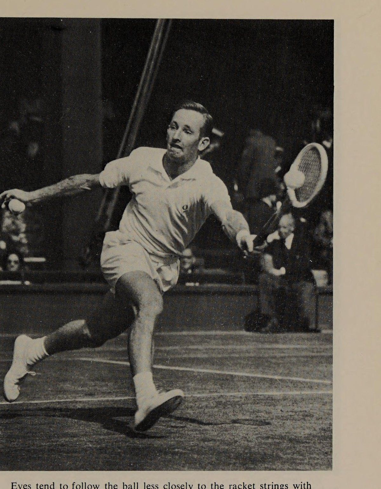
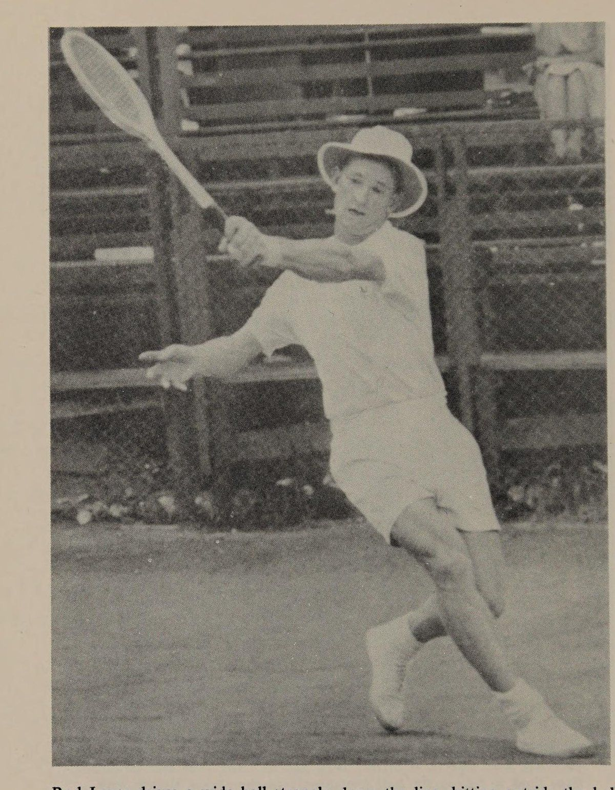
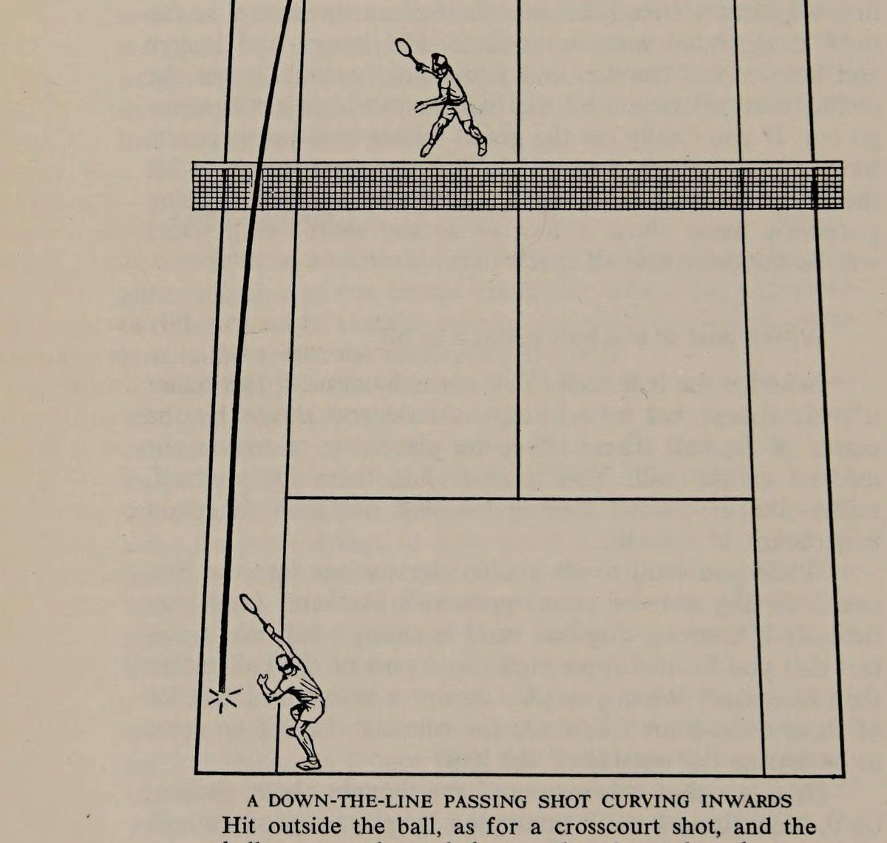
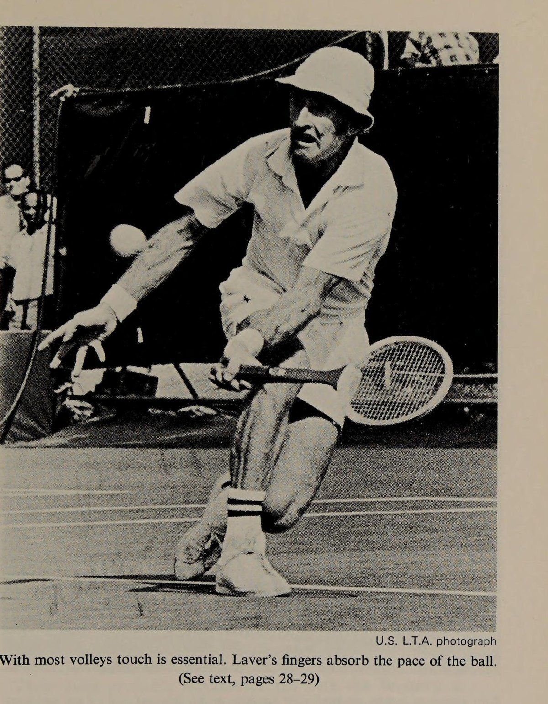
🎯 Chương 3: Bắt bài và khắc chế lối chơi của đối thủ (Getting to Grips with Your Opponent's Game)
1. Giải phẫu các kiểu cầm vợt: Nền tảng định hình phong cách
Là một tay vợt trình độ nâng cao, bạn không thể chỉ biết nhìn quả bóng mà còn phải biết 'đọc vị' cây vợt trên tay đối phương. Kiểu cầm vợt (grip) chính là chiếc chìa khóa cơ học quyết định toàn bộ quỹ đạo vung, góc tiếp xúc, độ xoáy và — quan trọng nhất — những điểm mù không thể khắc phục trong cú đánh của đối thủ.
Kiểu cầm vợt Continental (kiểu Lục địa / kiểu Anh): Khớp gốc ngón trỏ đặt trên cạnh số 2 của cán vợt bát giác. Đây là kiểu cầm vợt vạn năng kinh điển của các huyền thoại Úc như Jack Crawford, Lew Hoad hay Rod Laver. Ưu điểm tuyệt đối của nó là sự linh hoạt chớp nhoáng trên lưới (không cần đổi cán giữa vô-lê thuận và trái), khả năng cắt bóng chìm sát mặt sân và những cú đè bóng bẹt hiểm hóc. Tuy nhiên, gót chân Achilles của cán Continental là những quả bóng nảy cao ngang vai ở cuối sân: người cầm Continental rất khó tạo topspin để đè bóng xuống và dễ bị ngửa mặt vợt đánh bóng ra ngoài.
Kiểu cầm vợt Eastern (kiểu miền Đông): Khớp gốc ngón trỏ nằm trên cạnh số 3 (thuận tay) hoặc cạnh số 1 (trái tay). Đây là kiểu cầm vợt chuẩn mực cho những cú đánh bóng nảy uy lực, cho phép đánh bóng phẳng hoặc xoáy cuộn vừa phải ở tầm ngang thắt lưng. Tay vợt cầm Eastern có sự vững chắc tuyệt vời ở cổ tay nhưng cần chuyển đổi cán vợt nhịp nhàng giữa hai bên cánh.
Kiểu cầm vợt Western và Semi-Western (kiểu miền Tây): Khớp ngón trỏ nằm ở cạnh số 4 hoặc 5, như trường hợp của Manuel Santana. Kiểu cầm vợt này là cỗ máy tạo xoáy topspin cuộn cồng kềnh, cực kỳ lợi hại khi đối đầu với những quả bóng nảy cao trên sân đất nện. Tuy nhiên, nhược điểm chí mạng của nó là việc xử lý các đường bóng thấp, trượt chuội sát mặt đất hoặc các pha bóng nhanh sát lưới: tay vợt buộc phải Động tác sấp cổ tay / xoay trong cẳng tay quá mức và dễ bị động.
2. Đọc vị đối thủ trong 5 phút khởi động: 5 chi tiết vàng
Hầu hết người chơi phong trào lãng phí 5 phút khởi động trước trận đấu chỉ để đánh bóng qua lại lấy lệ. Ngược lại, một đấu thủ tinh quái coi 5 phút này là cuộc điều tra tình báo chiến thuật mang tính sống còn. Hãy quan sát kỹ 5 dấu hiệu then chốt sau:
Thứ nhất, quan sát kỹ thuật mở vợt thuận tay: Đối thủ mở vợt theo hình vòng cung lớn (loop) hay kéo thẳng ra sau? Nếu mở vòng cung lớn, họ cần nhiều thời gian để tạo đà; bạn hãy tấn công họ bằng những đường bóng nhanh, bắn sâu vào góc để họ không kịp hoàn tất vòng vung.
Thứ hai, cách chuyển cán vợt sang cú trái tay: Họ có đổi cán mượt mà không, hay vẫn giữ nguyên cán thuận tay để đẩy bóng? Cú trái tay của họ là cú đánh phẳng, vuốt topspin hay chủ yếu là cắt bóng lát mỏng (slice)? Nếu họ chỉ biết cắt bóng phòng thủ, bạn hoàn toàn có thể tràn lưới gây áp lực.
Thứ ba, tư thế chân khi đánh bóng: Họ đứng thế mở (open stance) hay bước chân trước vào sân (closed/square stance)? Người có thói quen bước chân trước thường gặp khó khăn trước những đường bóng bị ép thẳng vào vị trí thân người (body shot).
Thứ tư, cảm giác trên lưới: Khi lên lưới khởi động vô-lê, họ đấm bóng dứt khoát bằng cả cánh tay và bước chân tới, hay chỉ giơ cổ tay ra gõ bóng một cách thụ động? Người có quả vô-lê yếu sẽ lập tức hoảng sợ nếu bị bạn kéo lên lưới bằng những quả bỏ nhỏ hoặc bóng ngắn.
Thứ năm, quả giao bóng khởi động: Hãy chú ý đường tung bóng và độ nảy của quả giao bóng hai. Quả giao bóng hai của họ có độ xoáy kick cắm sâu không, hay chỉ là quả đẩy bóng mềm xèo nảy lơ lửng giữa ô giao bóng? Nếu là vế sau, bạn đã tìm ra mỏ vàng để tấn công ghi điểm trực tiếp ngay từ cú trả giao bóng.
3. Chiến thuật khắc chế các trường phái thi đấu điển hình
Đối đầu với 'Bức tường phòng thủ cuối sân' (The Baseliner / Retriever): Mẫu tay vợt này không có cú đánh sát thủ nhưng cực kỳ bền bỉ, chạy không biết mệt và kiên nhẫn đợi bạn tự đánh hỏng. Sai lầm phổ biến nhất là nóng vội tung ra những cú dứt điểm mạo hiểm từ xa. Chiến thuật đúng đắn: Hãy kiên nhẫn giằng co qua lại, khai thác bóng sâu vào góc yếu của họ, và bất ngờ thay đổi cự ly bằng một cú bỏ nhỏ tinh tế kéo họ lên lưới — nơi họ hoàn toàn bỡ ngỡ.
Đối đầu với 'Tay vợt giao bóng lên lưới áp đảo' (The Aggressive Net Rusher): Mẫu tay vợt này liên tục giao bóng lên lưới hoặc ép bóng sâu rồi ập vào đè bẹp bạn bằng những quả vô-lê nặng ký. Để khắc chế họ, bạn không nhất thiết phải cố đánh passing shot thắng điểm ngay; hãy trả giao bóng cắm thẳng vào chân họ khi họ đang trên đà lao xuống (chiến thuật dipping ball), buộc họ phải bắt vô-lê dưới tầm lưới, sau đó ung dung tung đòn kết liễu ở nhịp tiếp theo.
Đối đầu với 'Tay vợt đánh cầu âu thất thường' (The Erratic Shotmaker): Mẫu đấu thủ này có thể tung ra vài cú đánh không tưởng đẹp như mơ, nhưng ngay sau đó lại tự đánh hỏng liên tiếp ba bốn quả ngớ ngẩn. Bí quyết khi gặp họ là tuyệt đối không cuốn theo lối đánh hoang dã của đối phương; hãy duy trì quả bóng sâu và đều ở giữa sân, chơi thứ quần vợt kỷ luật và để mặc sự nôn nóng của họ tự chôn vùi chính họ.
4. Khai thác sự mất cân bằng giữa hai cánh và 'Lỗi sai cố hữu'
Mỗi người chơi đều có một 'lỗi sai cố hữu' (constant error) lặp đi lặp lại trong các tình huống chịu áp lực. Đó có thể là thói quen luôn đánh chéo sân khi bị ép ra góc xa, xu hướng giật cổ tay đẩy bóng bổng khi bị dồn bóng nhanh vào ngực, hoặc việc luôn giao bóng về phía rộng ở những điểm số quan trọng.
Một đấu thủ có tư duy đỉnh cao sẽ âm thầm ghi nhớ các khuôn mẫu này trong nửa đầu set 1. Đến các thời điểm bước ngoặt như 30-40 hay 40-40, bạn chỉ cần đón lõng đúng hướng đánh sở trường hoặc khoét sâu vào điểm mù quen thuộc của họ để giành lấy điểm số quyết định.
Bắt bài đối thủ không phải là trò đoán mò may rủi; đó là khoa học phân tích xác suất dựa trên sự quan sát tinh tường và thấu hiểu tâm lý hành vi con người.
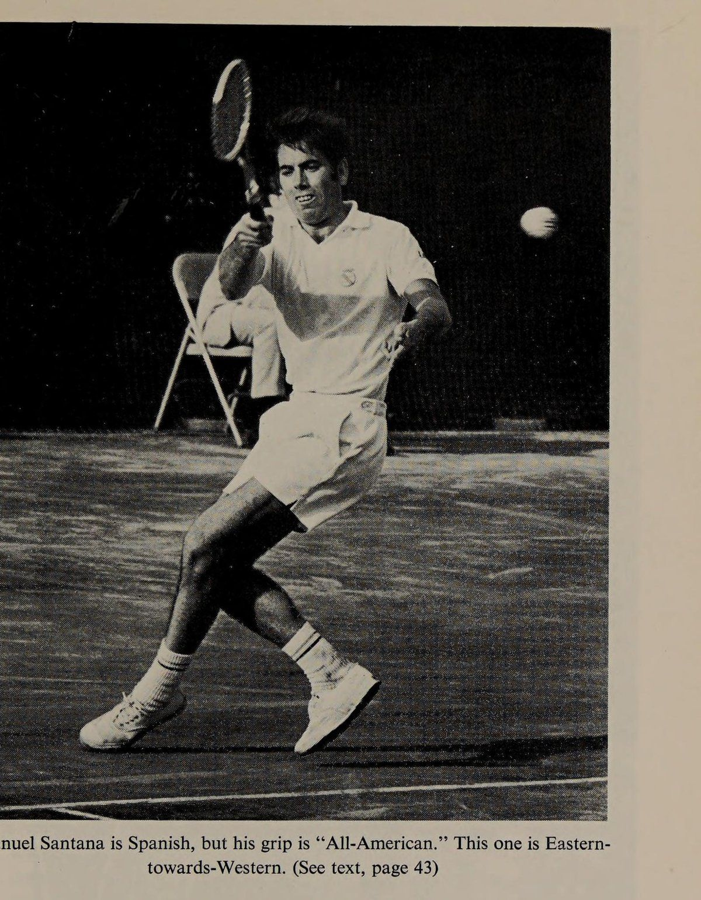
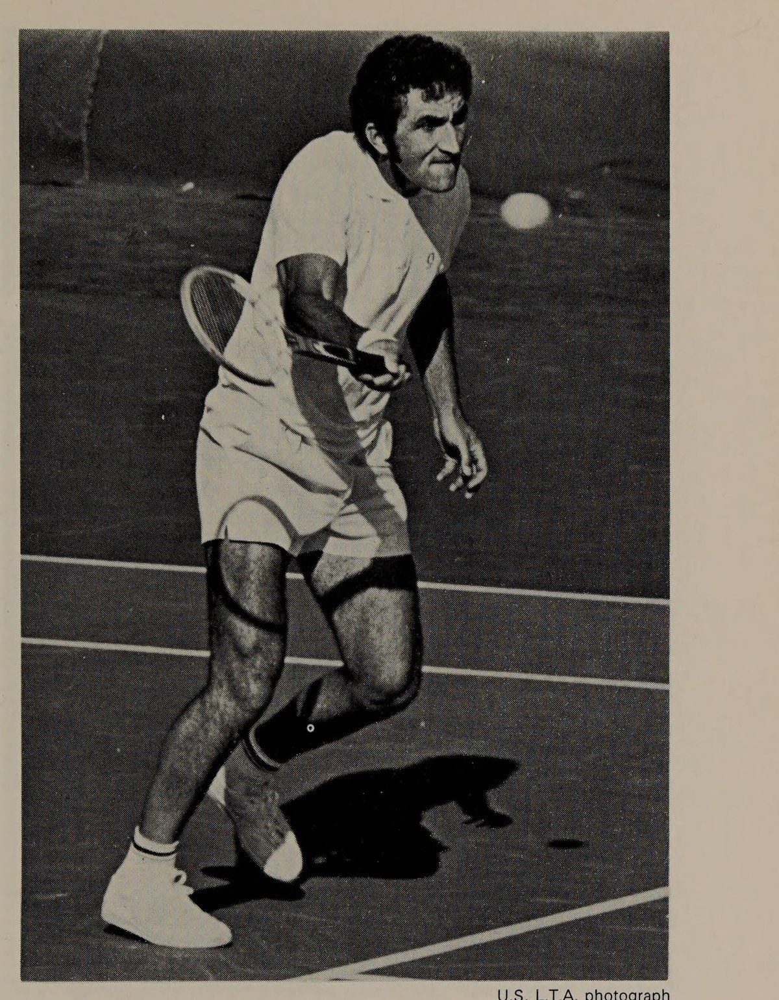
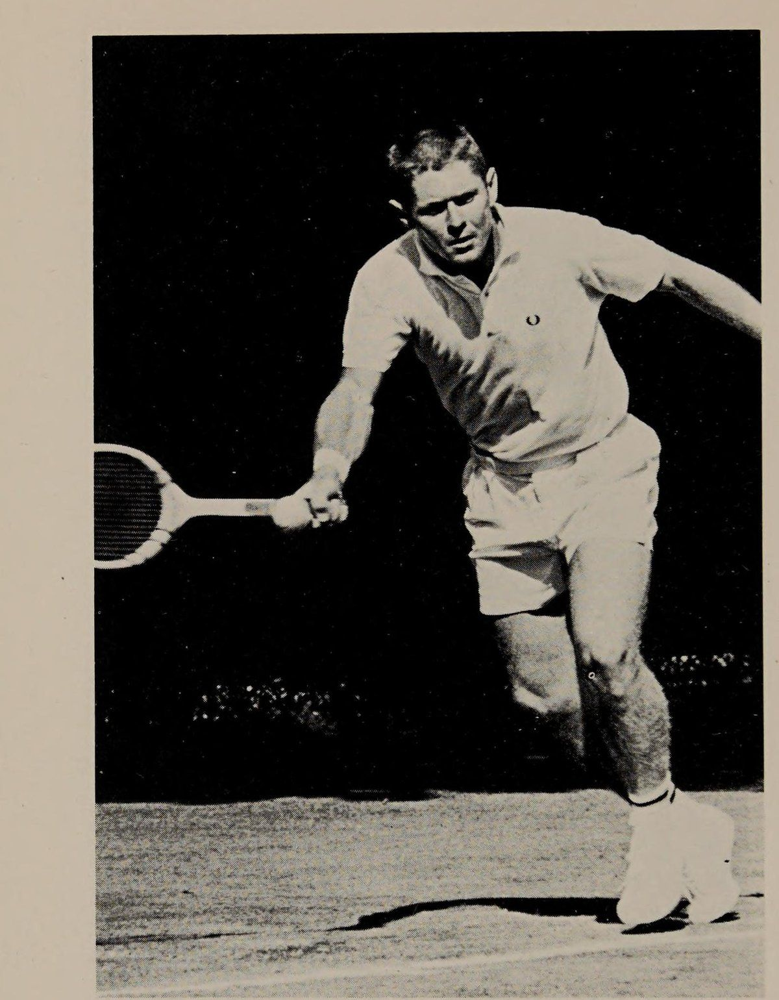
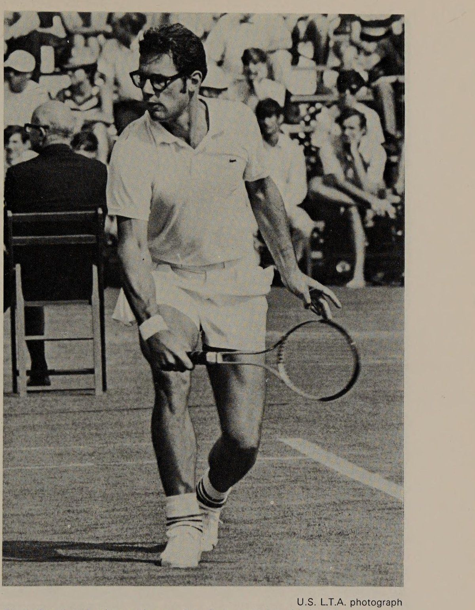
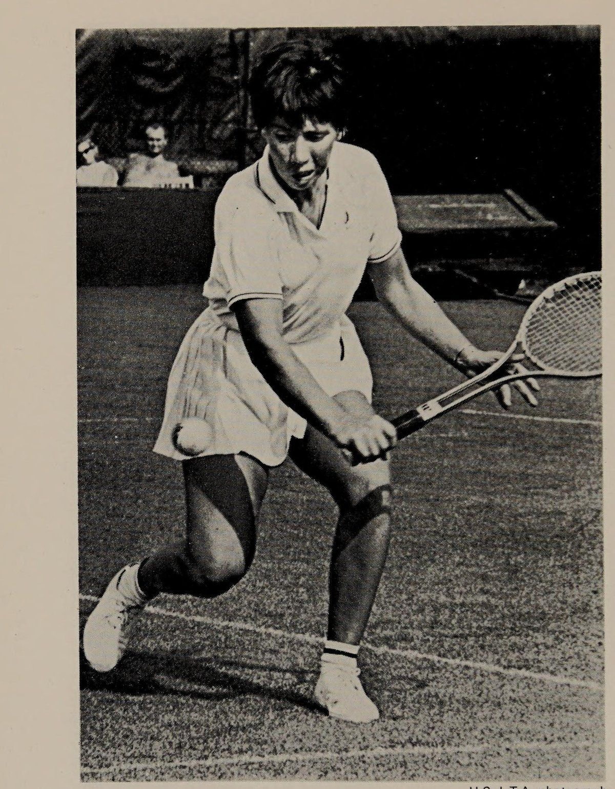
⚡ Chương 4: Rèn luyện những vũ khí hạng nặng (Training Your Big Guns)
1. Cú giao bóng tấn công: Thước đo đẳng cấp của tay vợt nâng cao
Ở trình độ nâng cao, cú giao bóng không còn đơn thuần là hành động đưa bóng vào cuộc; nó là phát súng mở màn thiết lập thế thượng phong hoặc kết liễu điểm số ngay tức khắc. Một cú giao bóng tấn công đẳng cấp đòi hỏi sự phối hợp hoàn hảo của Chuỗi động học liên hoàn học (kinetic chain) từ mặt đất truyền lên.
Động tác tung bóng (toss) là linh hồn của cú giao bóng. Quả bóng phải được nâng lên một cách êm ái bằng các đầu ngón tay thẳng, chứ không phải ném giật cục bằng cổ tay. Điểm tung bóng lý tưởng cho cú giao bóng một uy lực nằm ở vị trí hướng 1 giờ (đối với người thuận tay phải) và nhô nhẹ vào bên trong sân khoảng 20 đến 30 centimet. Độ cao của bóng chỉ nên vừa đủ chạm tới điểm vươn tay tối đa của vợt, tránh tung bóng quá cao khiến bóng bị gió thổi bạt hoặc làm đứt gãy nhịp điệu vung.
Khuỵu gối tích tụ năng lượng: Cả hai đầu gối gập sâu, hông đẩy nhẹ về phía trước tạo tư thế hình cánh cung (trophy pose). Khi bắt đầu vung vợt, lực đẩy từ bàn chân truyền qua đầu gối, xoay hông, mở vai, và đỉnh điểm là động tác phát lực lật cổ tay - cẳng tay (pronation) đánh thẳng vào lưng quả bóng tại điểm cao nhất có thể.
2. Triệt tiêu hoàn toàn lỗi giao bóng kép: Giữ đầu và mắt cố định
Cơn ác mộng lớn nhất của nhiều tay vợt là phạm lỗi giao bóng kép vào những điểm số định đoạt game đấu. Kịch bản phổ biến nhất diễn ra như sau: Quả giao bóng một đánh thật mạnh nhưng bóng đập thấp vào mặt lưới hoặc bay vọt ra ngoài; đến quả giao bóng hai, tay vợt bắt đầu run sợ, rụt tay lại và đẩy bóng ngập ngừng khiến bóng rúc lưới thảm hại.
Nguyên nhân cơ học hàng đầu gây ra lỗi giao bóng kép là việc hạ đầu và mắt xuống quá sớm để nhìn xem bóng có vào sân hay không. Khi cằm hạ xuống trước lúc tiếp xúc bóng, toàn bộ thân trên và vai sẽ gập xuống theo, kéo mặt vợt chúc xuống và dìm quả bóng thẳng vào lưới.
Bí quyết sửa chữa triệt để: Hãy giữ cằm ngửa cao và ánh mắt dán chặt vào khoảng không nơi tiếp xúc bóng thêm một phần mười giây sau khi bóng đã rời mặt vợt. Giữ nguyên tư thế đầu ổn định sẽ đảm bảo quỹ đạo vung vợt vươn cao qua lưới một cách an toàn. Ngoài ra, ở quả giao bóng hai, tuyệt đối không được giảm tốc độ vung vợt; hãy vung vợt nhanh tương đương quả một nhưng đổi hướng quét vợt từ dưới lên trên và chéo sang phải để tạo độ xoáy kick cắm sâu an toàn qua lưới.
3. Quả đập Smash trên không: Làm chủ không gian và dứt điểm uy lực
Nếu một tay vợt không sở hữu một quả đập smash đáng tin cậy, việc anh ta chiếm lĩnh vị trí trên lưới sẽ trở nên vô nghĩa. Khi đối thủ bị dồn vào thế hiểm và buộc phải lốp quả bóng bổng lên trời, một quả smash quyết đoán chính là đòn ân huệ kết thúc pha bóng.
Sai lầm phổ biến nhất khi đập smash là đứng nhìn bóng rơi rồi mới giơ vợt lên đánh, khiến người chơi bị bóng rơi ra phía sau lưng và phải với người vụng về. Kỹ thuật chuẩn xác của các bậc thầy như Lew Hoad hay Stan Smith bao gồm các bước sau:
Ngay khi đối phương vừa chạm bóng lốp lên, bạn phải lập tức xoay nghiêng người sang một bên, kéo vợt lên vị trí chuẩn bị sau gáy, đồng thời giơ tay không cầm vợt thẳng lên trời chỉ vào quả bóng để làm điểm ngắm và giữ thăng bằng. Dùng các bước di chuyển nghiêng (chassé / cross steps) thoái lui nhanh chóng về phía sau quả bóng, sao cho quả bóng luôn ở trước trán.
Tiếp xúc bóng ở tầm với cao nhất khi cơ thể bật nhẹ lên, chuyển trọng tâm dứt khoát từ chân sau sang chân trước, và Động tác sấp cổ tay / xoay trong cẳng tay đè bóng cắm sâu xuống sân đối diện. Một quả smash tốt không cần phải dùng 100% sức mạnh thô bạo; điều cốt tử là điểm tiếp xúc chuẩn xác và sự dứt khoát trong góc đánh.
4. Cú Smash trái tay (The Backhand Smash): Vũ khí của sự tự tin
Cú smash trái tay thường được coi là cú đánh khó nhất trong quần vợt, khiến nhiều tay vợt hoảng sợ đến mức chấp nhận lùi lại để bóng nảy lên rồi đánh bóng nảy thông thường. Tuy nhiên, minh chứng từ huyền thoại nữ Rosie Casals cho thấy bạn không cần phải có thân hình hộ pháp hay cơ bắp cuồn cuộn để thực hiện một cú smash trái tay hoàn hảo.
Chìa khóa của cú đánh này nằm ở việc xoay lưng hoàn toàn về phía lưới, đưa vai phải (đối với người thuận tay phải) hướng thẳng về phía bóng, và đưa đầu vợt chúc xuống dưới nách trái. Khi bóng rơi đến tầm với, duỗi thẳng cánh tay lên trên và bung mạnh cổ tay ra ngoài, tiếp xúc bóng ở vị trí hơi trước vai phải.
Mục tiêu của cú smash trái tay không nhất thiết phải là đánh bạt bóng cắm sàn; chỉ cần bạn đặt bóng sâu vào góc trống hoặc góc chéo sân hiểm hóc là đủ để duy trì thế chủ động và dồn ép đối thủ vào thế bế tắc.
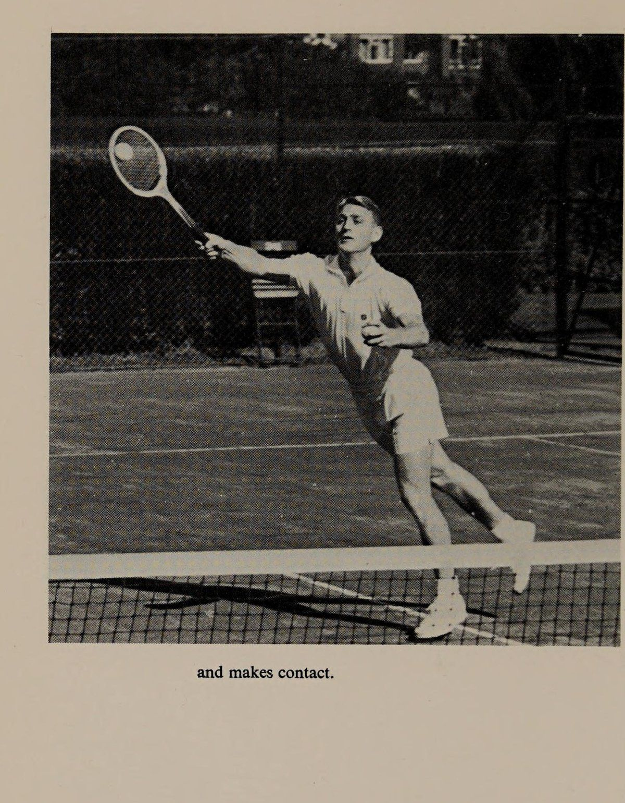
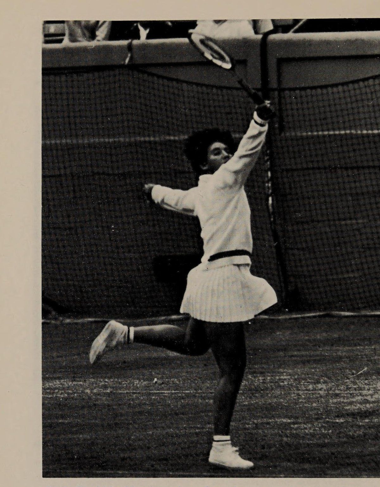
💥 Chương 5: Những cú đánh bóng chạm đất hiệu quả (Effective Ground Strokes)
1. Nền tảng cốt lõi: Cú đánh bóng phẳng hoặc xoáy nhẹ xuyên sân
Để đạt được hiệu quả tối đa trong quần vợt hiện đại, các cú đánh bóng nảy (groundstroke) phải được xây dựng trên nền tảng của những đường bóng phẳng hoặc xoáy cuộn nhẹ (flat or slightly topspun). Một cú đánh bạt sâu có độ cắm và tốc độ xuyên sân cao sẽ tước đoạt thời gian chuẩn bị của đối phương, đẩy họ ra xa khỏi vạch cuối sân và khiến họ không thể tổ chức tấn công.
Đặc điểm cơ học quan trọng nhất của cú đánh bóng nảy chuẩn mực là việc đưa mặt vợt đi qua quả bóng theo một đường thẳng tắp hướng về mục tiêu trong khoảng cách tối thiểu 30 đến 40 centimet. Điểm tiếp xúc phải luôn ở phía trước hông trước. Nếu bạn đánh bóng quá muộn (ở ngang hông hoặc sau thân người), mặt vợt sẽ bị ngửa lên hoặc giật chéo vào trong, khiến đường bóng mất kiểm soát hoàn toàn.
Chuyển dịch trọng tâm dứt khoát: Khi thực hiện cú đánh, hãy bước chân trước về hướng bóng, hạ thấp đầu gối và chuyển toàn bộ trọng lượng cơ thể từ chân sau sang chân trước ngay khoảnh khắc chạm bóng. Bức ảnh của Jack Crawford và Cliff Richey minh chứng sinh động cho việc đánh bóng 'qua chân trước' (across the front leg), tạo ra lực đánh đầm chắc mà không cần gồng cứng cơ bắp.
2. Làm chủ độ xoáy: Khi nào nên dùng Topspin và Underspin?
Xoáy cuộn Topspin: Là vũ khí thiết yếu khi bạn cần đưa bóng qua lưới ở tầm cao an toàn nhưng vẫn cắm nhanh xuống sân đối phương, hoặc khi tung ra những cú passing shot hiểm hóc qua tầm với của tay vợt đứng lưới. Để tạo topspin hiệu quả mà không làm bóng bị 'xịt' (mất lực), hạ đầu vợt xuống thấp hơn bóng khoảng 15-20 centimet trước khi tiếp xúc, sau đó chải mặt vợt từ dưới lên trên và xuyên qua tâm bóng. Động tác của Roy Emerson là ví dụ mẫu mực cho việc dùng topspin cực nặng để giải thoát khỏi những tư thế bị động hiểm nghèo.
Xoáy lùi Underspin (Slice): Là cú cắt bóng chém từ trên xuống dưới, làm quả bóng bay là là mặt lưới và trượt chuội sát mặt sân sau khi nảy. Cú slice cực kỳ hữu dụng trong các tình huống tiếp cận lên lưới (approach shot), đổi nhịp độ trận đấu hoặc chống lại những đối thủ cầm cán Western nảy bóng cao. Tuy nhiên, tác giả lưu ý rằng không nên lạm dụng slice làm cú đánh chủ lực trong các loạt bóng bền cuối sân, vì đường bóng trôi chậm sẽ tạo cơ hội cho đối thủ có thời gian tràn lưới áp đảo.
3. Chẩn đoán và khắc phục các lỗi sai kinh điển
Lỗi mở vợt muộn: Đây là căn bệnh phổ biến nhất của các tay vợt phong trào. Người chơi chỉ bắt đầu đưa vợt ra sau khi bóng đã nảy lên ở phần sân của mình. Hậu quả là họ phải vội vã giật vợt để đuổi theo bóng, dẫn đến tiếp xúc muộn sau người. Khắc phục: Hãy hình thành phản xạ xoay vai và mở vợt ra sau ngay khi bóng vừa rời khỏi mặt vợt của đối phương.
Lỗi gãy cổ tay khi tiếp xúc: Cổ tay lỏng lẻo hoặc giật lắc lung tung làm mặt vợt bị xoay lệch góc đúng lúc va chạm, khiến bóng lúc thì rúc lưới, lúc lại bay ra ngoài hàng rào. Khắc phục: Khóa cứng góc cổ tay từ vị trí hạ vợt đến khi kết thúc cú đánh, như minh chứng qua bức ảnh của Rosemary Casals.
Lỗi đổ người ra sau khi đánh (falling away): Người chơi có xu hướng ngả thân người về phía sau khi bóng bay tới nhanh hoặc nảy cao, khiến trọng tâm dồn lên chân sau và bóng bay vọt bổng lên trời. Khắc phục: Luôn giữ ngực và vai hướng về phía trước, bước chân tới đón bóng và chủ động ép trọng tâm đè bóng xuống.
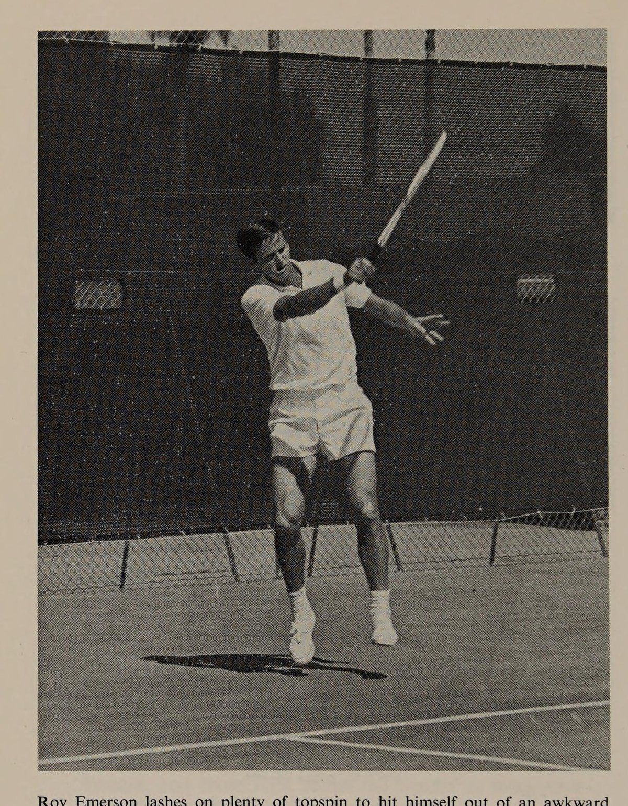
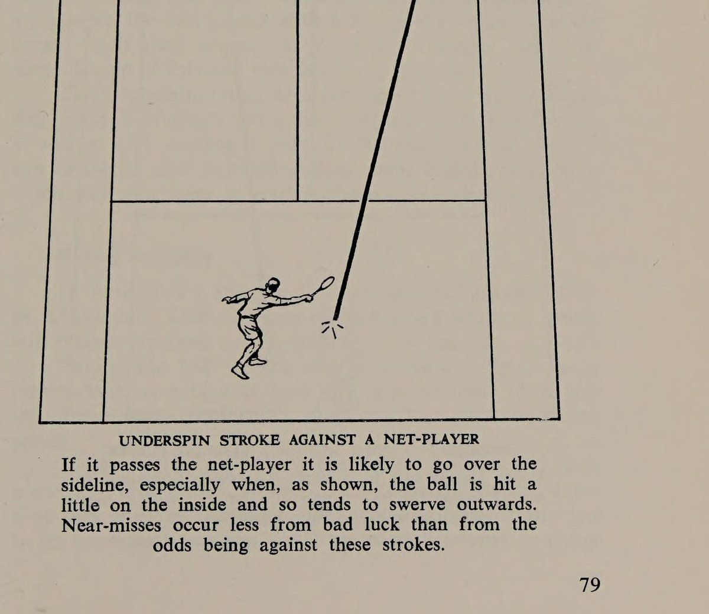
🎾 Chương 6: Bắt lưới, Bỏ nhỏ, Lốp bóng (Volleys, Drop Shots, Lobs)
1. Bản chất của cú Vô-lê: Đấm bóng dứt khoát, tuyệt đối không vung đà
Vô-lê là một cú đánh giòn giã, chớp nhoáng (crisp stroke). Sai lầm tai hại nhất của những người mới lên lưới là cố gắng vung đà ra sau như một cú đánh bóng nảy thông thường. Trên lưới, thời gian phản xạ chỉ tính bằng một phần trăm giây; nếu bạn vung vợt ra sau, bóng sẽ bay vụt qua bạn trước khi bạn kịp đưa vợt trở lại phía trước.
Kỹ thuật vô-lê chuẩn mực: Mở vợt cực kỳ ngắn — thực chất chỉ là động tác xoay vai và đưa mặt vợt ra trước mặt. Khi bóng tới, đấm mặt vợt thẳng vào quả bóng (punch the volley) kết hợp bước chân đối diện chéo tới phía trước để chặn bóng. Hãy tưởng tượng mặt vợt của bạn như một bức tường thép di động lao tới đón đầu quả bóng.
Vô-lê bóng cao và Vô-lê bóng thấp: Với những quả bóng cao ngang ngực hoặc ngang vai, hãy tấn công dứt khoát đè bóng cắm sâu xuống góc sân (như minh chứng qua cú vô-lê bóng cao của Margaret Court và Lew Hoad). Đối với những quả vô-lê thấp dưới tầm lưới, tuyệt đối không được hạ đầu vợt chúc xuống bằng cách Động tác sấp cổ tay / xoay trong cẳng tay; thay vào đó, hãy khuỵu sâu hai đầu gối, giữ đầu vợt luôn cao hơn cổ tay và khéo léo nâng bóng qua lưới (như kỹ thuật của Dennis Ralston và Arthur Ashe).
2. Cú Bỏ nhỏ (The Drop Shot): Nghệ thuật ngụy trang và Điểm rơi chết chóc
Một cú bỏ nhỏ hoàn hảo có thể làm suy sụp ý chí của đối thủ, đặc biệt là khi họ đang mải mê lùi sâu phòng thủ ở phía sau vạch cuối sân. Tuy nhiên, ranh giới giữa một cú bỏ nhỏ thiên tài và một quả bóng tự sát là vô cùng mong manh.
Yếu tố sống còn của cú bỏ nhỏ là khả năng ngụy trang động tác (disguise). Bạn phải chuẩn bị tư thế mở vợt giống hệt như chuẩn bị tung ra một cú đánh bóng bạt uy lực hoặc một cú cắt bóng sâu. Chỉ đến khoảnh khắc tiếp xúc bóng cuối cùng, bạn mới giảm tốc độ đầu vợt, mở ngửa nhẹ mặt vợt và dùng các ngón tay hãm nhẹ xung lực bóng, chém lát mỏng phía dưới quả bóng để tạo xoáy lùi ngược (backspin).
Khi chạm đất bên sân đối phương, quả bóng sẽ không nảy về phía trước mà nảy dựng đứng hoặc lăn ngược trở lại về phía lưới, khiến đối thủ dù có chạy hết tốc lực cũng không thể cứu bóng kịp thời.
3. Cú Lốp bóng (The Lob): Vũ khí lật ngược tình thế từ thế bị động
Khi bị đối phương ép góc dạt ra khỏi sân và họ đang áp sát mép lưới sẵn sàng kết liễu, cú lốp bóng chính là chiếc phao cứu sinh hữu hiệu nhất để bạn giải tỏa áp lực và giành lại thế cân bằng.
Cú lốp bóng phòng thủ (Defensive Moonball): Mở vợt mở ngửa, đón quả bóng ở vị trí thấp và hất bổng quả bóng lên thật cao trên không trung. Độ cao của bóng không chỉ làm đối thủ không thể nhảy lên smash mà còn cho bạn đủ thời gian quý giá (từ 2 đến 3 giây) để di chuyển trở lại tâm sân và thiết lập lại thế trận.
Cú lốp bóng tấn công Topspin (Offensive Topspin Lob): Đây là đỉnh cao của sự táo bạo được Rod Laver sử dụng thiện nghệ. Khi đối thủ áp sát lưới quá gần, thay vì đánh passing shot qua hai bên cánh, bạn vuốt bóng xoáy cuộn mạnh từ dưới lên trên qua đầu đối phương. Bóng chỉ bay cao vừa đủ vượt tầm với của vợt đối thủ, sau đó nhờ lực xoáy cuộn cực mạnh, bóng sẽ cắm chúc xuống phần sân trống phía sau lưng họ và nảy tít ra xa ngoài tầm với.
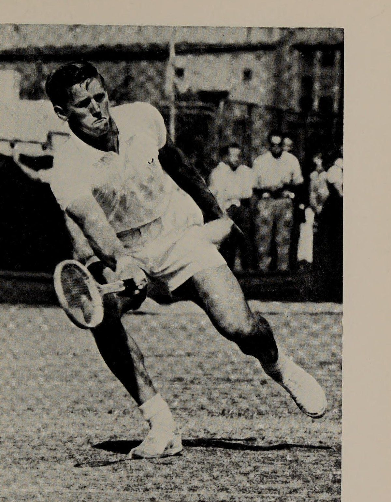
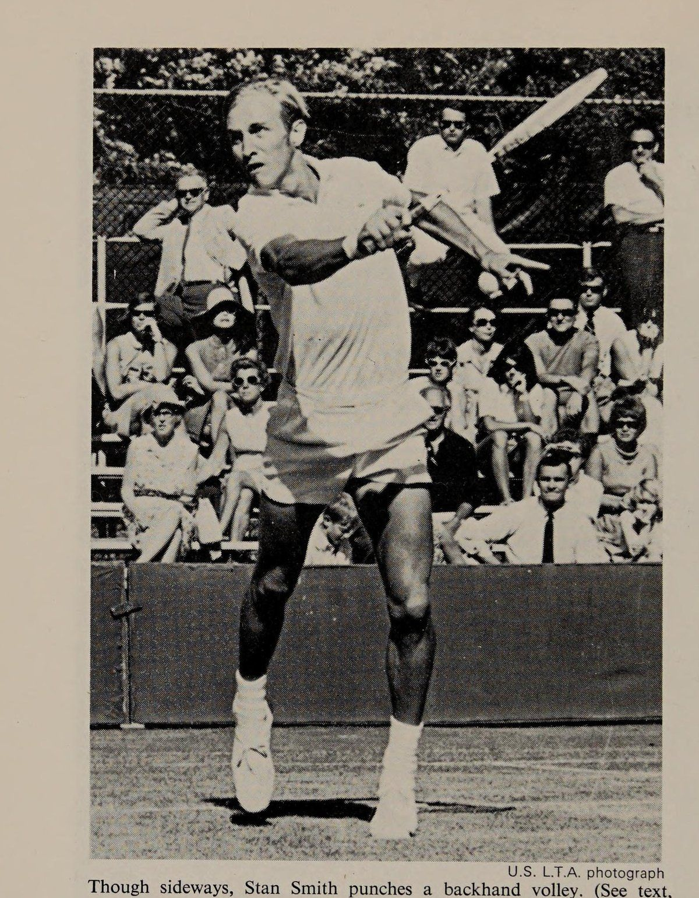
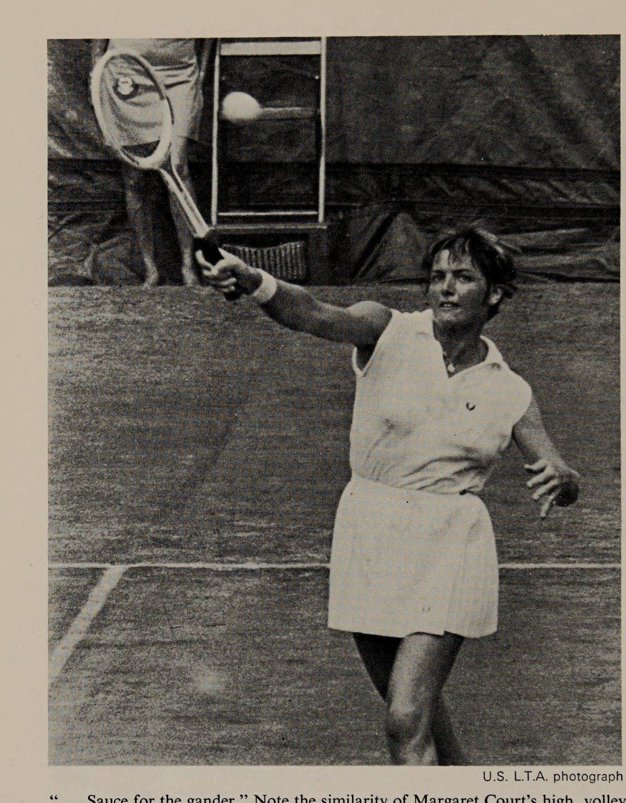
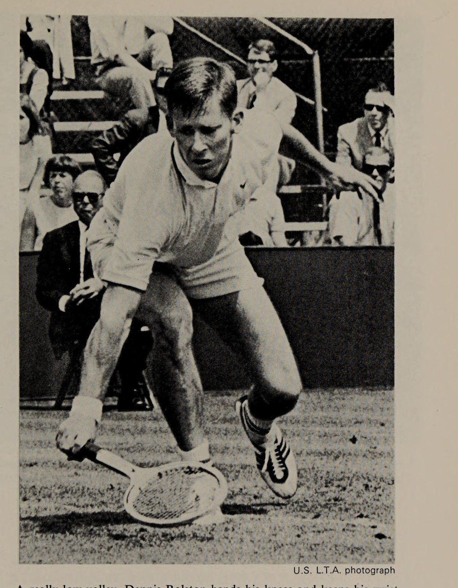
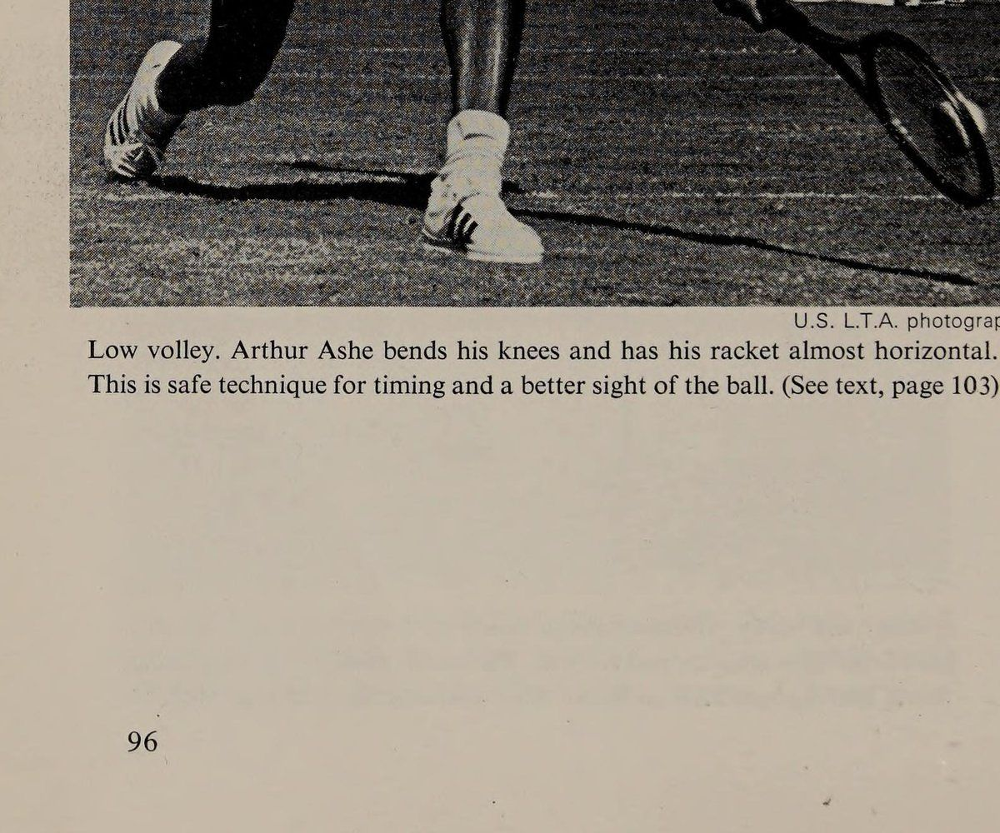
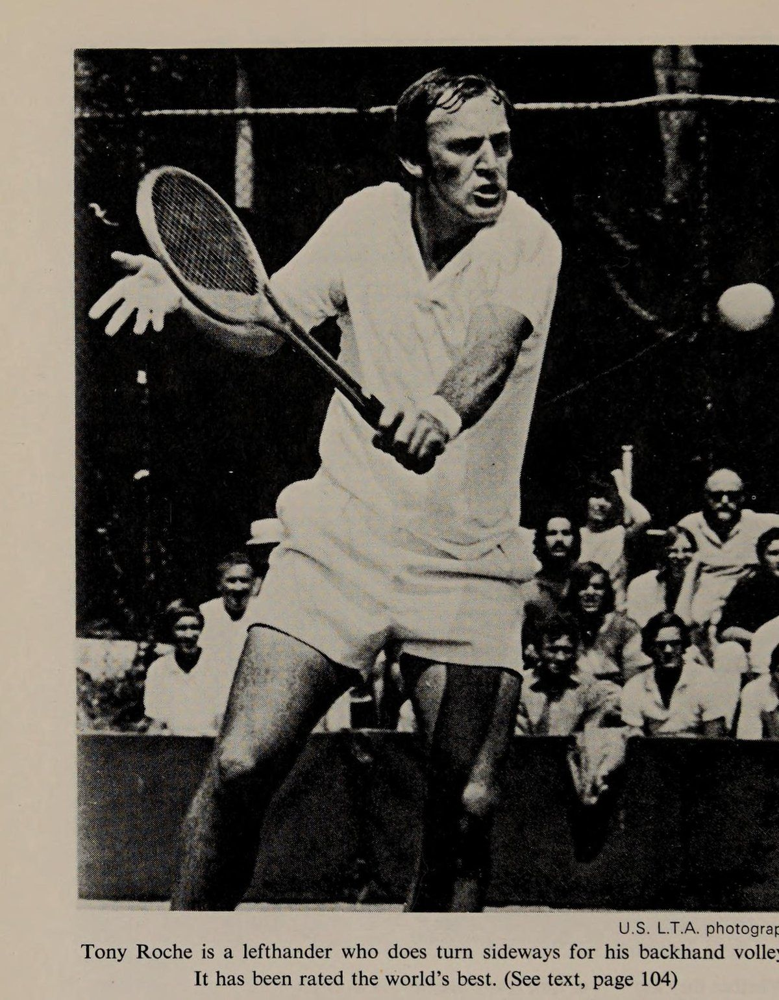
🏃 Chương 7: Bộ chân, Xoay sở tình huống hiểm nghèo và Thực hiện cú đánh (Footwork, Scrambling, Stroking)
1. Bộ chân thăng bằng: Chìa khóa vàng của mọi cú đánh đỉnh cao
Dù kỹ thuật vung vợt của bạn có hoàn hảo đến đâu trong sách giáo khoa, nó sẽ trở nên hoàn toàn vô dụng nếu đôi chân không thể đưa cơ thể đến đúng vị trí bóng trong trạng thái thăng bằng tối ưu. Hầu hết các lỗi đánh hỏng trên sân không bắt nguồn từ tay, mà bắt nguồn từ đôi chân lười biếng hoặc di chuyển sai nhịp.
Bước đệm Split-step: Đây là nền tảng của mọi chuyển động trên sân. Đúng vào khoảnh khắc đối thủ chạm vợt vào bóng, bạn phải thực hiện một bước nhảy đệm nhẹ bằng cả hai mũi chân và hạ thấp trọng tâm. Bước nhảy này nạp sẵn năng lượng đàn hồi cho các khớp cổ chân và đầu gối, giúp bạn sẵn sàng bứt tốc về bất kỳ hướng nào ngay tức thì mà không bị trễ nhịp.
Bước chân điều chỉnh nhỏ (adjustment steps): Sau khi bứt tốc tiếp cận vùng bóng, các tay vợt đẳng cấp luôn sử dụng 2 đến 3 bước chân nhỏ li ti để căn chỉnh cự ly chính xác giữa thân người và quả bóng, đảm bảo điểm tiếp xúc luôn rơi vào vùng tối ưu (sweet spot) của cơ thể.
2. Nghệ thuật xoay sở trong tình huống hiểm nghèo (Scrambling)
Trong những trận đấu căng thẳng đỉnh cao, bạn không thể lúc nào cũng có được tư thế đánh bóng thoải mái như trong các bài tập mẫu. Đối thủ sẽ dùng đủ mọi cách để đẩy bạn ra ngoài vạch biên, ép bóng vào sát người hoặc tạo ra những đường bóng nảy dị thường.
Lúc này, khả năng 'xoay sở' (scrambling) chính là yếu tố phân định đẳng cấp của một nhà vô địch. Thay vì giữ khư khư tư thế chân bước vuông góc chuẩn mực, bạn phải linh hoạt áp dụng thế đứng mở (open stance) để vừa chạy trượt cứu bóng, vừa dùng lực xoay của thân trên và cổ tay để hất bóng trở lại sân đối phương.
Bức ảnh Billie Jean King thích ứng với một đường bóng nảy xấu trên sân cỏ minh chứng cho phẩm chất của một tay vợt lớn: không bao giờ phàn nàn hay chùn bước trước nghịch cảnh, mà lập tức điều chỉnh hạ thấp trọng tâm, giữ ánh mắt kiên định và điều khiển cây vợt ứng biến theo hoàn cảnh thực tế.
3. Vẻ đẹp của cú đánh: Sự cộng hưởng của tính hiệu quả cơ học
Người ta thường trầm trồ ca ngợi vẻ đẹp thẩm mỹ thanh thoát trong lối đánh của Jack Crawford hay Roger Federer sau này. Nhưng vẻ đẹp đó không phải là một màn trình diễn hình thức được dàn dựng công phu.
Trong thể thao đỉnh cao, cái đẹp thực chất là biểu hiện trực quan của sự tối ưu hóa cơ học. Một cú đánh trông đẹp mắt và nhẹ nhàng bởi vì nó không hề có bất kỳ động tác thừa nào, các nhóm cơ phối hợp nhịp nhàng theo Chuỗi động học liên hoàn học, và năng lượng được chuyển giao một cách êm ái từ mặt đất qua hông, vai, cánh tay và mặt vợt.
Khi bạn loại bỏ được sự gồng cứng và chuyển động vụng về, cú đánh của bạn sẽ tự khắc toát lên vẻ thanh thoát, uy lực và mang lại hiệu quả chiến thuật cao nhất.
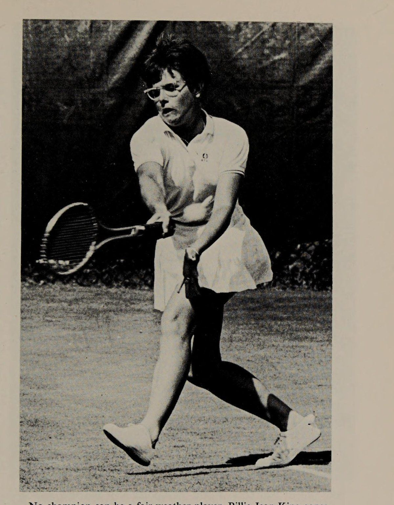
🌪️ Chương 8: Đối mặt với các trở ngại (In the Face of Obstacles)
1. Chế ngự ngọn gió: Xuôi gió, Ngược gió và Gió tạt ngang
Gió là một trong những trở ngại lớn nhất làm xáo trộn nhịp điệu thi đấu của các tay vợt. Tuy nhiên, thay vì bực bội than vãn, một đấu thủ khôn ngoan coi ngọn gió như một đồng minh chiến thuật và điều chỉnh lối chơi linh hoạt theo từng hướng gió.
Khi thi đấu xuôi gió (bóng bay theo chiều gió): Ngọn gió sẽ tiếp thêm tốc độ và đẩy quả bóng bay xa hơn bình thường rất nhiều. Sai lầm phổ biến là cố đánh thật mạnh khiến bóng bay vọt ra ngoài vạch cuối sân. Chiến thuật chuẩn xác: Hãy vung vợt với độ mở đà ngắn hơn, gia tăng tối đa xoáy cuộn topspin để đè bóng cắm xuống sân, và hạn chế tối đa việc lốp bóng bổng vì bóng rất dễ bay ra ngoài hàng rào.
Khi thi đấu ngược gió (đánh đối diện ngọn gió): Quả bóng sẽ bị gió cản lại, bay chậm và nảy ngắn hơn. Lúc này, hãy tự tin tung ra những cú đánh bạt bóng phẳng và sâu xuyên qua ngọn gió, hạ thấp mép lưới mục tiêu. Đây cũng là thời điểm hoàn hảo để tràn lưới áp sát, bởi những cú passing shot của đối phương ngược gió sẽ bay rất chậm và không đủ lực để xuyên thủng hàng rào phòng ngự của bạn.
Khi gặp gió thổi tạt ngang: Hãy luôn đánh bóng lệch về phía đón gió (ngược hướng gió thổi) để ngọn gió tự động bạt bóng trở lại tâm sân an toàn, tránh đánh bóng sát mép biên thuận chiều gió vì bóng sẽ dễ bị cuốn ra ngoài hành lang.
2. Hóa giải ánh nắng chói chang khi giao bóng và smash
Thi đấu dưới cái nắng gay gắt vào buổi trưa hoặc chiều tà là một thử thách thị giác khốc liệt. Khi tung bóng giao bóng hoặc ngửa mặt lên trời để đập smash, ánh nắng chói chang có thể làm bạn lóa mắt hoàn toàn trong vài giây định mệnh.
Để hóa giải trở ngại này, hãy điều chỉnh điểm tung bóng: thay vì tung bóng thẳng lên đỉnh đầu ngay trước mặt trời, hãy tung bóng hơi chếch sang một bên hoặc thấp hơn một chút để bóng nằm ngoài quầng sáng mặt trời. Ngoài ra, việc sử dụng mũ lưỡi trai có viền sẫm màu bên dưới và đeo kính thể thao chuyên dụng sẽ giảm thiểu tối đa hiện tượng chói mắt.
Khi đập smash dưới trời nắng gắt, hãy dùng tay không cầm vợt giơ lên che chắn bớt góc nhìn trực tiếp vào mặt trời trong lúc ngắm bóng. Nếu quả bóng lốp của đối phương rơi trúng tâm vầng mặt trời, đừng cố nhảy lên đập mù quáng; hãy lùi lại một bước, để bóng nảy lên khỏi mặt đất rồi tung cú đánh bóng nảy an toàn vào góc sân trống.
3. Thích nghi với mặt sân xấu và những tình huống tranh chấp điểm số
Không phải trận đấu nào cũng diễn ra trên những mặt sân tiêu chuẩn hoàn hảo. Sân đất nện lồi lõm, sân cỏ trơn trượt sau mưa hay sân bê tông nứt nẻ đều tạo ra những đường bóng nảy bất thường không thể lường trước. Bức ảnh Julie Heldman kiên cường thi đấu trên mặt sân lầy bùn là minh chứng cho tinh thần chiến binh: người chiến thắng không bao giờ để điều kiện sân bãi làm phân tâm.
Khi thi đấu trên mặt sân xấu, hãy hạ thấp trọng tâm cơ thể nhiều hơn bình thường, luôn giữ đầu vợt ở tư thế sẵn sàng và không bao giờ đoán mò điểm nảy của bóng. Hãy đợi bóng nảy lên thực tế rồi mới tung đòn quyết định.
Đối với những tình huống tranh cãi về bóng trong hay ngoài sân: Hãy giữ thái độ lịch thiệp và kiên định. Tuyệt đối không để sự bực tức làm vấy bẩn tâm trí trong các pha bóng tiếp theo. Hãy nhường điểm số gây tranh cãi nếu không có trọng tài chính thức, và dồn toàn bộ sự tập trung để giành lấy điểm số ngay sau đó bằng một cú đánh không thể chối cãi.
4. Vượt qua sự mệt mỏi và kiệt sức ở những set đấu cuối
Khi trận đấu kéo dài sang set thứ ba hoặc thứ năm dưới cái nóng oi ả, đôi chân bắt đầu nặng như chì và các cơ bắp kêu gào đòi nghỉ ngơi. Đây là lúc bản lĩnh ý chí quyết định tất cả.
Để duy trì thể lực, hãy tận dụng tối đa 20 giây nghỉ giữa các điểm số và 90 giây đổi sân: hít thở sâu bằng cơ hoành, uống từng ngụm nước nhỏ kết hợp điện giải, lau khô mồ hôi trên trán và bàn tay cầm vợt.
Về mặt chiến thuật khi thể lực suy giảm: Đừng cố chạy đua trong những loạt bóng bền vô tận cuối sân; hãy chủ động rút ngắn điểm số bằng cách giao bóng hiểm hóc, tấn công vào điểm yếu của đối thủ và tràn lưới dứt điểm nhanh gọn.
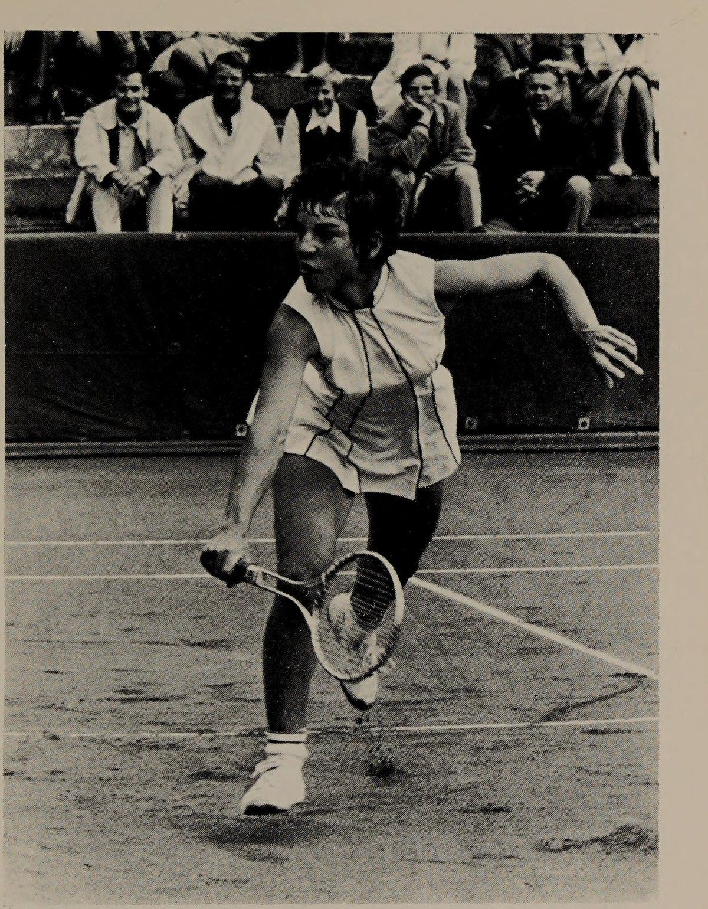
👥 Chương 9: Nghệ thuật Đánh đôi đỉnh cao (Effective Doubles)
1. Triết lý đánh đôi hiện đại: Bức tường thép trên lưới và Di chuyển đồng bộ
Đánh đôi không phải là hai trận đánh đơn diễn ra cùng lúc trên một sân khấu mở rộng; đó là một môn thể thao hoàn toàn khác biệt với những quy luật chiến thuật riêng. Trong đánh đôi, đội nào chiếm lĩnh và làm chủ được khu vực lưới trước, đội đó nắm giữ hơn 80% cơ hội chiến thắng.
Nguyên lý 'Chiếc dây thừng vô hình' (The Tandem Movement): Hai người đồng đội trên sân phải di chuyển như thể họ được nối với nhau bằng một sợi dây thừng dài cố định khoảng 3 đến 4 mét. Khi người này di chuyển sang phải để chặn bóng, người kia phải lập tức trượt sang phải theo để bịt kín khoảng trống trung lộ. Khi một người tiến lên áp sát lưới, người kia cũng phải dâng lên hỗ trợ tạo thành một bức tường chắn vững chắc.
Khoảng trống chết người trong đánh đôi không nằm ở hai bên hành lang dọc dây, mà nằm ở chính giữa sân (trung lộ). Đội đánh đôi xuất sắc luôn ưu tiên khép chặt trung lộ và ép đối phương phải mạo hiểm tung ra những cú đánh passing shot hẹp góc qua mép biên cực kỳ rủi ro.
2. Chiến thuật giao bóng trong đánh đôi: 3 hướng giao bóng chiến lược
Trong đánh đôi, một quả giao bóng sấm sét nhưng bay chệch hướng có thể trở thành thảm họa nếu đối phương phản xạ trả bóng nhanh thẳng vào người đồng đội đang đứng lưới của bạn. Mục tiêu hàng đầu của quả giao bóng đôi là đẩy người trả giao bóng vào thế bị động, tạo cơ hội cho người đứng lưới vồ bóng kết liễu.
Sơ đồ 3 hướng giao bóng then chốt vào góc trái tay người nhận (như minh họa trong sơ đồ cuốn sách): Hướng A-A (Đứng gần điểm giữa vạch cuối sân giao bóng cắm vào góc chữ T trung lộ); Hướng B-B (Đứng ở vị trí trung gian giao bóng xoáy ép thẳng vào thân người); Hướng C-C (Đứng dạt ra biên giao bóng chém góc rộng kéo đối thủ bật bãi ra ngoài sân).
Giao bóng vào góc chữ T (trung lộ) luôn là lựa chọn an toàn và hiệu quả nhất trong đánh đôi, bởi nó triệt tiêu hoàn toàn góc đánh chéo sân nguy hiểm của người trả giao bóng và buộc họ phải đánh bóng qua phần lưới cao nhất ngay trước tầm vợt của người đứng lưới.
3. Nghệ thuật vồ lưới (Poaching): Phán đoán, Tín hiệu và Cú cắt mặt dũng cảm
Một tay vợt đứng lưới chỉ biết đứng chôn chân bảo vệ hành lang dọc dây của mình là một tay vợt vô dụng trong đánh đôi. Người đứng lưới xuất sắc phải là một mối đe dọa thường trực, một bóng ma rình rập sẵn sàng cắt ngang mọi đường bóng trả của đối phương.
Nghệ thuật vồ lưới (Poaching) đòi hỏi sự phối hợp tín hiệu ngầm giữa hai đồng đội trước khi giao bóng. Khi đã thống nhất tín hiệu vồ lưới, người đứng lưới phải giữ tư thế chờ đợi tự nhiên cho đến đúng khoảnh khắc người trả giao bóng bắt đầu đà vung vợt về phía trước — thời điểm mà mắt họ đã khóa chặt vào bóng và không thể đổi hướng đánh được nữa.
Đúng lúc đó, người đứng lưới bứt tốc chéo góc về phía trước trung lộ, giơ vợt đè bóng dứt khoát cắm sâu xuống khoảng sân trống giữa hai đối thủ. Một cú vồ lưới thành công không chỉ mang về một điểm số mà còn gieo rắc nỗi sợ hãi tâm lý nặng nề lên người trả giao bóng của đối phương trong suốt phần còn lại của trận đấu.
4. Trả giao bóng trong đánh đôi: Cú đánh cắm chân (Dipping Return) và Lốp bóng chiến thuật
Khi đối đầu với một cặp đôi giao bóng lên lưới cừ khôi, cú trả giao bóng của bạn không được phép bay bổng ngang ngực hay lơ lửng giữa sân. Hãy tập trung trả những đường bóng chìm sát mặt lưới, rơi thẳng vào mũi giày của tay vợt giao bóng đang trên đà lao xuống (dipping ball).
Khi buộc đối thủ phải bắt vô-lê ở tư thế cúi gập người dưới tầm lưới, họ chỉ có thể hất bóng bổng lên một cách bất lực. Đó là thời cơ vàng để bạn hoặc đồng đội của bạn ập vào tung đòn kết liễu.
Ngoài ra, cú lốp bóng qua đầu tay vợt đứng lưới (lob over the net-man) là đòn giải vây tuyệt hảo khi bị đối phương dồn ép nghẹt thở. Một quả lốp chuẩn xác vào góc sâu cuối sân sẽ buộc cả hai đối thủ phải hốt hoảng quay đầu rút lui, lập tức đảo ngược thế trận từ phòng ngự sang tấn công cho đội của bạn.
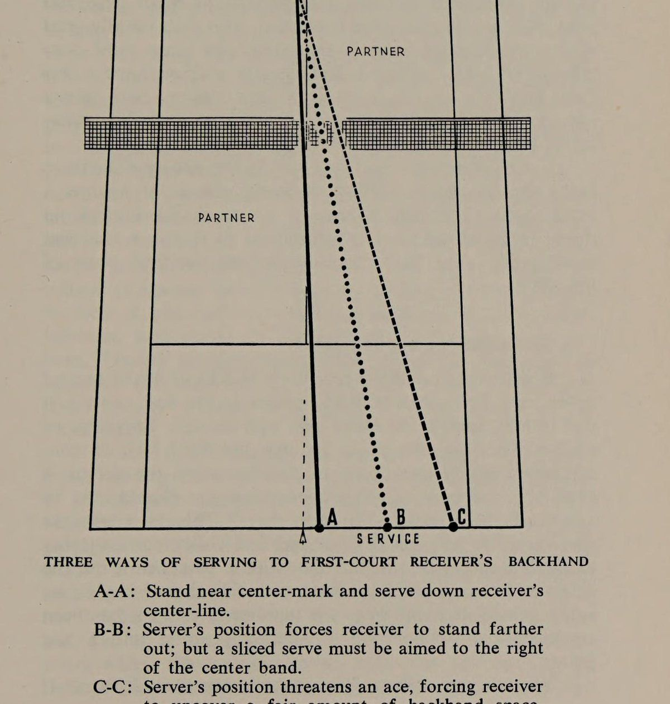
🏆 Chương 10: Những điểm số đặc thù và Nghệ thuật ghi điểm (Points - Particular and Sundry)
1. Đẳng cấp xử lý các 'Điểm số lớn' (Big Points): 30-All, Deuce và Break Point
Một trận đấu quần vợt có thể kéo dài hàng trăm điểm số, nhưng thực tế kết quả chung cuộc thường được định đoạt chỉ bởi 5 đến 6 'điểm số lớn'. Đó là các thời điểm then chốt như 30-đều, 40-40 (Deuce), điểm bẻ giao bóng (Break Point) hay điểm quyết định set đấu (Set/Match Point).
Tại các điểm số này, bản năng của người chơi nghiệp dư là co cụm phòng thủ hoặc ngược lại, liều lĩnh tung ra cú đánh sát thủ điên rồ. Cả hai thái cực đó đều dẫn đến thất bại. Chiến thuật của các nhà vô địch là: Chơi thứ quần vợt có xác suất thành công cao nhất với cú đánh sở trường đáng tin cậy nhất của mình.
Hãy ép đối phương phải thực hiện thêm một cú đánh khó, duy trì quả bóng sâu qua phần sân an toàn và không bao giờ tự dâng tặng điểm số bằng một lỗi đánh hỏng tự phát vô cớ.
2. Nhận diện và hóa giải 'Điểm chùng trận đấu' (The Dead Spots)
Hầu như trong mọi trận đấu đều xuất hiện những 'điểm chùng' bí ẩn (dead spots) — những khoảng thời gian mà nhịp độ trận đấu bỗng nhiên trùng xuống, năng lượng tinh thần chùng chình và tay vợt liên tiếp mắc những lỗi đánh hỏng ngớ ngẩn.
Thời điểm dễ xuất hiện điểm chùng nhất là ngay sau khi bạn vừa bẻ được game giao bóng của đối phương, hoặc ngay đầu set 2 sau khi vừa thắng thuyết phục set 1. Sự thỏa mãn tiềm thức khiến cơ thể thả lỏng quá mức cần thiết, chân ngừng di chuyển và phản xạ trở nên chậm chạp.
Hãy cảnh giác cao độ trước cái bẫy này. Ngay sau khi giành được break point hoặc thắng set đầu, hãy tự nhắc nhở bản thân: 'Game đấu tiếp theo là game quan trọng nhất của trận đấu'. Hãy xốc lại tinh thần, dậm chân thật mạnh và thi đấu với quyết tâm gấp đôi để củng cố vững chắc lợi thế vừa giành được.
3. Nghệ thuật tự lội ngược dòng khi rơi vào thế tuyệt vọng
Khi bạn đang bị dẫn trước 1-5 hoặc đối mặt với nhiều match point, tâm lý thông thường là hoảng sợ và tuyệt vọng. Nhưng những cuộc lật đổ vĩ đại nhất trong lịch sử quần vợt luôn bắt đầu từ chính thời khắc đen tối này.
Để xoay chuyển tình thế: Hãy làm chậm nhịp độ trận đấu lại một cách có chủ đích. Đi bộ chậm rãi giữa các điểm số, hít thở sâu và thay đổi hoàn toàn lối đánh đang bị đối phương bắt bài. Nếu bạn đang thua vì đánh bóng bền, hãy bất ngờ tràn lưới; nếu bạn đang thua vì giao bóng một hỏng, hãy chuyển sang giao bóng xoáy an toàn.
Khi bạn thắng lại một game, rồi hai game, sự hoang mang và áp lực tâm lý sẽ lập tức chuyển giao sang phía bên kia lưới của đối thủ. Chỉ cần bạn từ chối bỏ cuộc, cánh cửa chiến thắng sẽ luôn hé mở.
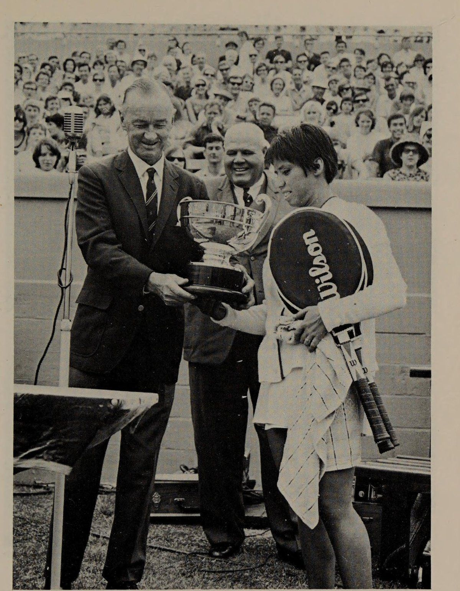
✨ Chương 11: Những lời khuyên then chốt lúc chia tay (Parting Shots)
1. Lời tâm huyết của tác giả Paul Metzler
Tôi không dám khẳng định rằng mọi điều tôi viết ra trong cuốn sách này đều là chân lý bất biến và không thể tranh luận. Tôi chỉ có thể chia sẻ rằng đây là toàn bộ tinh hoa kinh nghiệm mà tôi đã đúc kết và kiểm chứng qua hàng ngàn trận đấu thực chiến trong suốt cuộc đời gắn bó với quần vợt.
Quần vợt là một môn thể thao kỳ diệu — nơi trí tuệ chiến thuật, kỹ năng cơ học và bản lĩnh tâm lý hòa quyện làm một. Nâng cao trình độ quần vợt không phải là việc cố bắt chước một cách máy móc các động tác của một thần tượng nào đó, mà là quá trình thấu hiểu quy luật vận động của cơ thể, tôn trọng đường bay của quả bóng và tìm ra lối đánh phù hợp nhất với thể chất và tính cách của chính bạn.
2. Ba nguyên tắc vàng để tiếp tục hoàn thiện lối chơi
Thứ nhất, luôn thi đấu trong giới hạn kiểm soát cơ học của bản thân: Biết rõ vũ khí nào của mình là đáng tin cậy nhất và xây dựng chiến thuật xoay quanh nó, đồng thời không ngừng mài giũa để thu hẹp những điểm yếu kỹ thuật.
Thứ hai, nuôi dưỡng bản lĩnh thông qua sự bình thản trước thắng thua: Coi mỗi trận thua là một bài học đắt giá để hoàn thiện mình, và coi mỗi chiến thắng là lời nhắc nhở phải tiếp tục khiêm tốn học hỏi.
Thứ ba, trân trọng tinh thần thể thao cao thượng (sportsmanship): Đối thủ bên kia lưới không phải là kẻ thù, mà là người bạn đồng hành giúp bạn khám phá những giới hạn cao nhất của bản thân. Một chiến thắng chỉ thực sự có ý nghĩa trọn vẹn khi nó được xây dựng trên sự trung thực, tôn trọng và niềm đam mê thuần khiết dành cho môn thể thao quý tộc này.